<!doctype html>
<html lang="en">
<head>
  <meta charset="utf-8">
  <meta name="viewport" content="width=device-width, initial-scale=1">
  <title>arxiv digest — 2026-06-24</title>
  <style>
:root {
  --bg: #ffffff;
  --fg: #1f2328;
  --muted: #59636e;
  --border: #d0d7de;
  --card: #f6f8fa;
  --link: #0969da;
}
body {
  max-width: 980px;
  margin: 0 auto;
  padding: 2rem 1rem 5rem;
  font-family: -apple-system, BlinkMacSystemFont, "Segoe UI", Helvetica, Arial, sans-serif;
  line-height: 1.55;
  color: var(--fg);
  background: var(--bg);
}
a { color: var(--link); }
img { max-width: 100%; height: auto; }
pre, code { background: var(--card); border-radius: 6px; }
pre { padding: 1rem; overflow-x: auto; }
blockquote { border-left: 4px solid var(--border); padding-left: 1rem; color: var(--muted); }
details { margin: 0.6rem 0; }
summary { cursor: pointer; font-weight: 600; }
.paper-figures-scroll {
  display: flex;
  gap: 1rem;
  overflow-x: auto;
  overscroll-behavior-x: contain;
  padding: 0.75rem 0.25rem 1rem;
  margin: 1rem 0 1.25rem;
  border-top: 1px solid var(--border);
  border-bottom: 1px solid var(--border);
  scroll-snap-type: x proximity;
}
.paper-figure-card {
  flex: 0 0 min(260px, 72vw);
  scroll-snap-align: start;
  background: var(--card);
  border: 1px solid var(--border);
  border-radius: 12px;
  padding: 0.55rem;
}
.paper-figure-card img {
  display: block;
  width: 100%;
  max-height: 240px;
  object-fit: contain;
  background: white;
  border-radius: 8px;
}
.paper-figure-caption {
  display: block;
  margin-top: 0.5rem;
  color: var(--muted);
  font-size: 0.85rem;
}
.figure-strip-hint {
  color: var(--muted);
  font-size: 0.9rem;
  margin-bottom: -0.3rem;
}
</style>
  <!-- MathJax: renders $...$ inline math and $$...$$ display math, plus
       \(...\) and \[...\]. Loaded from the official CDN; works offline
       once cached. Configured to skip code/pre blocks so arxiv IDs that
       look like dollar amounts don't get mangled. -->
  <script>
    window.MathJax = {
      tex: {
        inlineMath: [['$', '$'], ['\\(', '\\)']],
        displayMath: [['$$', '$$'], ['\\[', '\\]']],
        processEscapes: true,
        processEnvironments: true
      },
      options: {
        skipHtmlTags: ['script', 'noscript', 'style', 'textarea', 'pre', 'code'],
        ignoreHtmlClass: 'tex2jax_ignore',
        processHtmlClass: 'tex2jax_process'
      }
    };
  </script>
  <script id="MathJax-script" async
    src="https://cdn.jsdelivr.net/npm/mathjax@3/es5/tex-chtml.js"></script>
</head>
<body>
<header style="background-color: #333; color: white; padding: 15px; margin-bottom: 20px;">
  <h1 style="margin: 0; font-size: 24px;">
    <a href="https://ochelpan.github.io/arXiv_clean/" style="color: white; text-decoration: none;">Main</a>
  </h1>
</header>

<h1>Daily arXiv Report</h1>

<hr>
<p>
<a href="index.html">← Index</a>
 · <a href="papers_03.html">← Previous</a> · <a href="papers_05.html">Next →</a>
</p>
<hr>

<h2>Papers 61–80</h2>
<p><a id="paper-2606.23799"></a></p>
<h3 id="fermi-surface-change-and-math544math-wave-superconductivity-in-the-square-lattice-kondo-heisenberg-model"><a href="http://arxiv.org/abs/2606.23799v1">Fermi surface change and $d$-wave superconductivity in the square lattice Kondo-Heisenberg model</a></h3>
<p><strong>Authors:</strong> Alexander Nikolaenko, Riccardo Rende, Luciano Loris Viteritti, Subir Sachdev, Ya-Hui Zhang<br>
<strong>Type:</strong> theory · <strong>Category:</strong> strongly correlated electrons · <strong>PDF:</strong> <a href="https://arxiv.org/pdf/2606.23799v1">https://arxiv.org/pdf/2606.23799v1</a><br>
<strong>Analysis basis:</strong> full PDF text, analyzed in chunks
<strong>Topic relevance:</strong> <code>Kondo &amp; dissipative impurity</code> <strong>3/5</strong> · <code>methods for driven-dissipative</code> <strong>3/5</strong> · <code>Keldysh / 2PI / non-Gaussian methods</code> <strong>1/5</strong> · <code>analog quantum simulation</code> <strong>1/5</strong></p>
<div class="figure-strip-hint">↔ Scroll figures horizontally</div>
<div class="paper-figures-scroll">
<figure class="paper-figure-card">
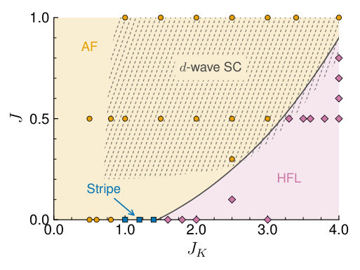
<figcaption class="paper-figure-caption"><b>Fig 1.</b> FIG. 1. Ground-state phase diagram of the two-dimensional Kondo-Heisenberg model [see Eq. (1)] on a square lattice with periodic boundary conditions, shown in the (JK, J) plane (in units of t) at hole doping δ = 1/4. We identify an antiferro- magnetic N´eel phase (AF), a stripe magnetic phase (Stripe), a heavy Fermi liquid (HFL), and a d-wave superconducting phase (d-wave SC) that coexists with the underlying phase. Markers denote the phase assigned to each simulated param- eter point.</figcaption>
</figure>
<figure class="paper-figure-card">
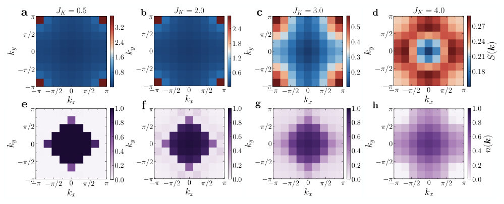
<figcaption class="paper-figure-caption"><b>Fig 2.</b> FIG. 2. Static spin structure factor S(k) (top row, panels a–d) and conduction-electron momentum distribution n(k) (bottom row, panels e–h) in the first Brillouin zone, at fixed J = 0.5 and four representative values of the Kondo coupling: JK = 0.5 (panels a,e), JK = 2.0 (panels b,f), JK = 3.0 (panels c,g), and JK = 4.0 (panels d,h).</figcaption>
</figure>
<figure class="paper-figure-card">
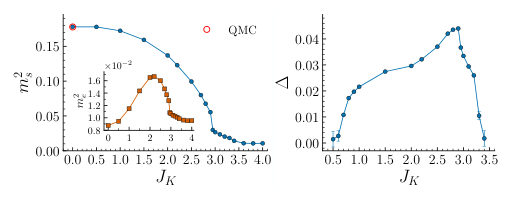
<figcaption class="paper-figure-caption"><b>Fig 3.</b> FIG. 4. Left: squared staggered magnetization m2 s = S(π, π)/N of the local moments as a function of JK at J = 0.5, with QMC data [43] at JK = 0.0 for comparison. The in- set shows the conduction-electron magnetization m2 e. Right: pairing order parameter ∆as a function of JK along the same cut.</figcaption>
</figure>
<figure class="paper-figure-card">
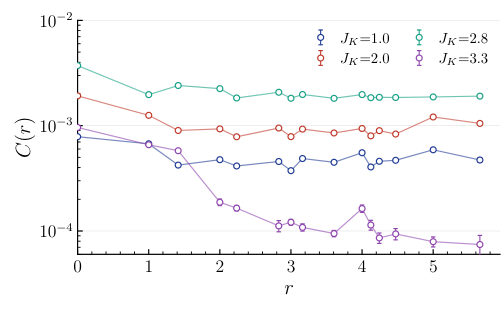
<figcaption class="paper-figure-caption"><b>Fig 4.</b> FIG. 3. Connected dx2−y2 pair–pair correlator C(r) as a func- tion of distance r = |r| at J = 0.5, for JK = 1.0, 2.0, 2.8, and 3.3.</figcaption>
</figure>
<figure class="paper-figure-card">
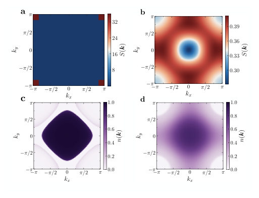
<figcaption class="paper-figure-caption"><b>Fig 5.</b> FIG. 5. Mean field local-moment structure factor S(k) (top row) and conduction-electron momentum distribution n(k) (bottom row) in the first Brillouin zone, at fixed J = 0.5 and three representative values of the Kondo coupling: JK = 2.0 (left, panels a, c) and JK = 4.0 (right, panels b, d).</figcaption>
</figure>
</div>

<p><strong>Summary.</strong> The paper theoretically investigates the Kondo-Heisenberg model to understand how magnetism and superconductivity compete. Using advanced quantum simulation methods like NQS, it demonstrates that the system undergoes a fundamental change in its electronic Fermi surface structure. This transition region hosts robust $d_{x^2-y^2}$ superconductivity, suggesting pairing is mediated by residual antiferromagnetic correlations.</p>
<p><strong>Why it may be interesting.</strong> This work directly addresses fundamental questions in strongly correlated electron physics, particularly the mechanism of unconventional superconductivity arising from competing magnetic orders, which is a major focus area for theoretical condensed matter physicists.</p>
<details>
<summary>Detailed structure</summary>
<p><strong>Main problem.</strong> The study investigates the interplay between Fermi surface changes, antiferromagnetism, and unconventional $d_{x^2-y^2}$ superconductivity in a two-dimensional Kondo-Heisenberg model.</p>
<p><strong>Main result.</strong> The model exhibits a transition from a small to a large electronic Fermi surface as the Kondo coupling increases, with $d$-wave superconductivity appearing robustly in the crossover region between magnetic and heavy Fermi liquid states.</p>
<p><strong>Method.</strong> The research employs advanced quantum many-body techniques, primarily Neural Network Quantum States (NQS) variational optimization, supplemented by mean-field calculations for comparison.</p>
<p><strong>Model / system.</strong> The system is a two-dimensional Kondo-Heisenberg model on a square lattice, describing conduction electrons interacting with localized spin moments via exchange and Kondo couplings. The Hamiltonian includes terms for hopping, Heisenberg exchange ($J$), and Kondo coupling ($JK$).</p>
<p><strong>Key observables.</strong> Fermi surface enclosed area (small vs. large), $d_{x^2-y^2}$ pairing correlator ($\Delta$), staggered magnetization ($m_s^2$), and conduction electron momentum distribution ($n(\mathbf{k})$).</p>
<p><strong>Important parameters / regimes.</strong> Kondo coupling ($JK$) and Heisenberg coupling ($J$); the analysis is performed at fixed doping (e.g., $\delta=1/4$).</p>
<p><strong>Assumptions / limitations.</strong> The use of NQS methods allows for calculations away from half-filling, avoiding the sign problem encountered by auxiliary-field QMC; mean-field approaches are used for comparison but are noted to overestimate magnetic order.</p>
<p><strong>Figures summary.</strong> Figures illustrate the evolution of order parameters ($m_s^2$ vs. $\Delta$) across different coupling regimes, showing a superconducting dome peaking near the quantum critical point where the Fermi surface changes character.</p>
<p><strong>Paper structure.</strong> The paper systematically maps the ground-state phase diagram by analyzing how electronic and magnetic order parameters evolve as tuning parameters (Kondo/Heisenberg couplings) are varied. It contrasts results from NQS with mean-field theory to establish physical regimes.</p>
</details>
<details>
<summary>Abstract</summary>
<p>We study the two-dimensional Kondo-Heisenberg model on a square lattice, with the conduction electrons away from half-filling, using neural network quantum states. Mapping the ground-state phase diagram as a function of the Kondo and Heisenberg couplings, we identify (i) at weak Kondo coupling, antiferromagnetic Néel order with a Fermi surface whose enclosed area counts only the conduction electrons and is insensitive to the Néel order, and (ii) at strong coupling, a heavy Fermi liquid with a Fermi surface whose enclosed area counts both the conduction electrons and the spins. In the crossover between these regimes, we find $d_{x^2-y^2}$ superconductivity, evidenced by off-diagonal long-range order in the pair-pair correlations and a pairing-amplitude dome that coexists with the underlying magnetic phase. Our results establish Fermi volume change and unconventional superconductivity as intrinsic features of the two-dimensional Kondo-Heisenberg model.</p>
</details>
<p><sub><a href="#top">↑ back to top</a></sub></p>

<p><a id="paper-2606.24126"></a></p>
<h3 id="fluctuation-exchange-study-on-the-electron-hole-asymmetry-of-the-superconductivity-across-13-filling-in-the-trilayer-hubbard-model"><a href="http://arxiv.org/abs/2606.24126v1">Fluctuation exchange study on the electron-hole asymmetry of the superconductivity across 1/3 filling in the trilayer Hubbard model</a></h3>
<p><strong>Authors:</strong> Yushi Yamada, Masataka Kakoi, Masayuki Ochi, Kazuhiko Kuroki<br>
<strong>Type:</strong> theory · <strong>Category:</strong> strongly correlated electrons · <strong>PDF:</strong> <a href="https://arxiv.org/pdf/2606.24126v1">https://arxiv.org/pdf/2606.24126v1</a><br>
<strong>Analysis basis:</strong> full PDF text, analyzed in chunks
<strong>Topic relevance:</strong> <code>Keldysh / 2PI / non-Gaussian methods</code> <strong>3/5</strong> · <code>analog quantum simulation</code> <strong>3/5</strong> · <code>exotic spin models in light-matter</code> <strong>1/5</strong> · <code>methods for driven-dissipative</code> <strong>1/5</strong></p>
<div class="figure-strip-hint">↔ Scroll figures horizontally</div>
<div class="paper-figures-scroll">
<figure class="paper-figure-card">
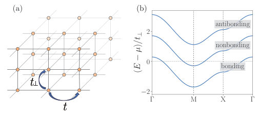
<figcaption class="paper-figure-caption"><b>Fig 1.</b> FIG. 1. (a) Real-space structure of the trilayer square lattice. (b) Tight-binding band structure for t/t⊥= 0.25, with the chemical potential µ set to 1/3-filling.</figcaption>
</figure>
<figure class="paper-figure-card">
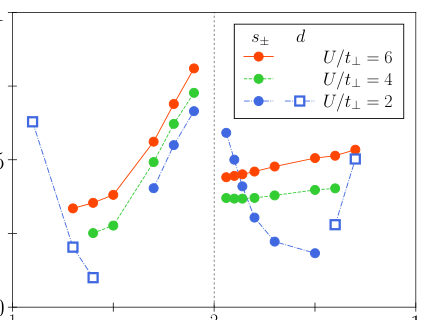
<figcaption class="paper-figure-caption"><b>Fig 2.</b> FIG. 2. Band filling n dependence of the eigenvalue λ of the linearized Eliashberg equation (9) for various values of U/t⊥= 2, 4, 6 at t/t⊥= 0.25. Band filling n = 2/3 corre- sponds to 1/3-filling. Circles denote points where the anoma- lous self-energy (gap function) ∆has s-wave symmetry, while open squares denote d-wave symmetry.</figcaption>
</figure>
<figure class="paper-figure-card">

<figcaption class="paper-figure-caption"><b>Fig 3.</b> Figure 2 shows the eigenvalue λ obtained by solving the linearized Eliashberg equation (9) for various U/t⊥ and the band filling n. Here, the band filling is defined as the number of electrons per site, by which n = 2/3 corre- sponds to 1/3-filling. Interestingly, while λ is symmetric about n = 2/3 for U/t⊥= 2, λ in the electron-doped region is strongly suppressed for U/t⊥= 4 and 6. This situation is reminiscent of the electron–hole asymmetry found in the three-leg ladder with strong interchain cou- pling. In the weak coupling limit, the three-leg ladder with strong interchain coupling hosts the C1S0 phase, which is favorable for superconductivity, both in electron- and hole-doped regions...</figcaption>
</figure>
<figure class="paper-figure-card">
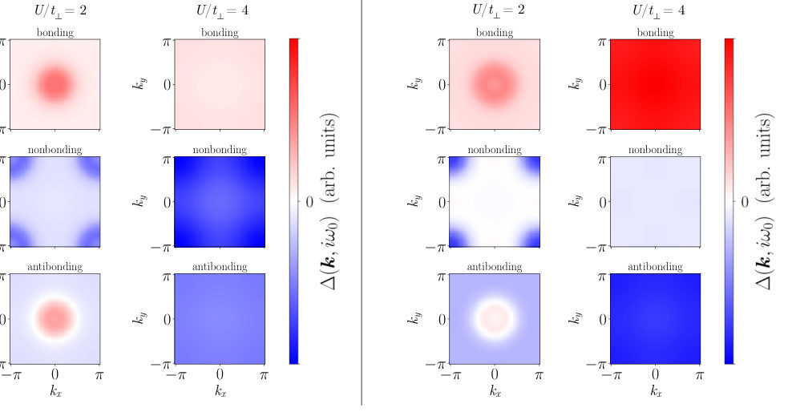
<figcaption class="paper-figure-caption"><b>Fig 4.</b> FIG. 3. Band representations of the gap function ∆(k, iω0) at the lowest Matsubara frequency iω0 = iπkBT, obtained for U/t⊥= 2, 4 at (a) n = 2/3 −δ and (b) n = 2/3 + δ with δ = 0.0333.</figcaption>
</figure>
<figure class="paper-figure-card">
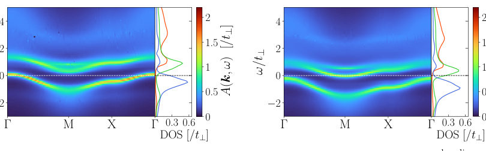
<figcaption class="paper-figure-caption"><b>Fig 5.</b> FIG. 4. Spectral functions and partial density of states (DOS) for (a) n = 2/3 −δ, U/t⊥= 2, (b) n = 2/3 + δ, U/t⊥= 2, (c) n = 2/3 −δ, U/t⊥= 4, and (d) n = 2/3+δ, U/t⊥= 4, with δ = 0.0333. The blue, green, and red lines represent the partial DOS components of the bonding, nonbonding, and antibonding bands, respectively.</figcaption>
</figure>
</div>

<p><strong>Summary.</strong> This theoretical study analyzes superconductivity in a trilayer Hubbard model near $1/3$ filling using the FLEX approximation. It finds that while weak interactions yield symmetric superconducting behavior, strong correlations induce a significant electron-hole asymmetry favoring hole doping. This suggests that spin fluctuations play a crucial role in determining the pairing symmetry and stability of the superconducting state.</p>
<p><strong>Why it may be interesting.</strong> While focused on correlated electrons, the detailed analysis of pairing mechanisms ($\Delta$) and susceptibility ($\chi_s$) provides insights into how collective excitations (spin fluctuations) mediate pairing in strongly interacting quantum systems, which has parallels to dynamics studied in AMO physics.</p>
<details>
<summary>Detailed structure</summary>
<p><strong>Main problem.</strong> The study investigates the electron-hole asymmetry of superconductivity near $1/3$ filling in the trilayer Hubbard model.</p>
<p><strong>Main result.</strong> Strong correlations (large U) induce a pronounced electron-hole asymmetry, favoring superconductivity when the system is hole-doped relative to $1/3$ filling.</p>
<p><strong>Method.</strong> The research employs the Fluctuation Exchange Approximation (FLEX) combined with solving the linearized Eliashberg equation to calculate superconducting parameters.</p>
<p><strong>Model / system.</strong> The model is the trilayer Hubbard model, featuring three coupled layers and an onsite interaction U. The analysis focuses on band fillings near $1/3$ where bonding and nonbonding bands are nearly half-filled.</p>
<p><strong>Key observables.</strong> Superconducting coupling constant ($\lambda$), gap function ($\Delta$), spectral function ($A(\mathbf{k}, \omega)$), and dynamical spin susceptibility ($ ext{Im } \chi_s$).</p>
<p><strong>Important parameters / regimes.</strong> Interaction strength ratio ($U/t_{\perp}$), doping level (hole-doped vs. electron-doped relative to $1/3$ filling).</p>
<p><strong>Assumptions / limitations.</strong> The primary approximation used is the Fluctuation Exchange Approximation (FLEX) theory, and calculations involve solving the linearized Eliashberg equation.</p>
<p><strong>Figures summary.</strong> Figures illustrate $\lambda$ dependence on doping showing asymmetry for large $U/t_{\perp}$, and gap functions ($\Delta$) confirming $s_{\pm}$-wave structure in the hole-doped case versus local pairing at strong coupling.</p>
<p><strong>Paper structure.</strong> The paper progresses by first establishing the model and methodology (FLEX, Eliashberg), then comparing weak vs. strong coupling limits to identify the emergence of electron-hole asymmetry, and finally analyzing gap functions and spin susceptibilities across different doping regimes.</p>
</details>
<details>
<summary>Abstract</summary>
<p>We study within the fluctuation exchange approximation the trilayer Hubbard model where three layers of the Hubbard model are coupled by large interlayer hoppings so that the overlap of the bonding, nonbonding, and antibonding bands is relatively small. We pay special attention to the band fillings close to 1/3, for which the bonding and nonbonding bands as a whole are close to half filling. For relatively small values of the onsite $U$, superconductivity roughly exhibits electron-hole symmetric behavior, as expected for a nearly half-filled two-band system. By contrast, an asymmetry appears when $U$ becomes large, where superconductivity is more favored in the hole-doped regime, i.e., in the regime where electrons are removed from 1/3 filling. We attribute this asymmetry to the asymmetric renormalization of the bonding, nonbonding, and antibonding bands when $U$ is large.</p>
</details>
<p><sub><a href="#top">↑ back to top</a></sub></p>

<p><a id="paper-2606.24591"></a></p>
<h3 id="auxiliary-schmidt-rank-as-a-resource-for-photonic-bell-measurements"><a href="http://arxiv.org/abs/2606.24591v1">Auxiliary Schmidt Rank as a Resource for Photonic Bell Measurements</a></h3>
<p><strong>Authors:</strong> Pradip Laha, Peter van Loock<br>
<strong>Type:</strong> theory · <strong>Category:</strong> quantum information and computing · <strong>PDF:</strong> <a href="https://arxiv.org/pdf/2606.24591v1">https://arxiv.org/pdf/2606.24591v1</a><br>
<strong>Analysis basis:</strong> full PDF text, analyzed in chunks
<strong>Topic relevance:</strong> <code>entanglement &amp; information structure</code> <strong>3/5</strong> · <code>quantum measurements</code> <strong>3/5</strong> · <code>measurement-induced transitions</code> <strong>1/5</strong></p>
<div class="figure-strip-hint">↔ Scroll figures horizontally</div>
<div class="paper-figures-scroll">
<figure class="paper-figure-card">
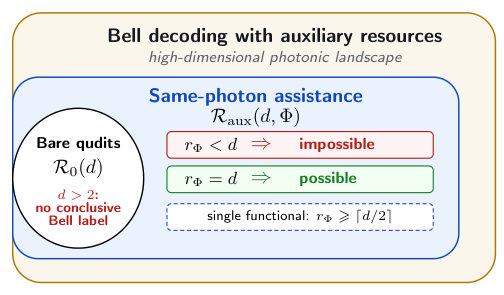
<figcaption class="paper-figure-caption"><b>Fig 1.</b> FIG. 1. Resource hierarchy for deterministic high-dimensional Bell-state decoding. The bare two-photon/vacuum-mode class R0(d) admits no conclusive generalized Bell-label out- come for d &gt; 2 [42]. Same-photon auxiliary entanglement can realize a single Bell-label functional at rΦ ⩾⌈d/2⌉, but de- terministic decoding in the static passive two-photon model requires full auxiliary Schmidt rank.</figcaption>
</figure>
<figure class="paper-figure-card">
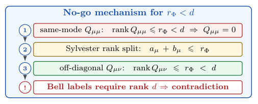
<figcaption class="paper-figure-caption"><b>Fig 2.</b> FIG. 2. Deterministic no-go mechanism for rΦ &lt; d. Same- mode two-photon outcomes are rank deficient and must van- ish in any deterministic analyzer. This enforces the rank split aµ+bµ ⩽rΦ, which makes every off-diagonal contraction rank deficient as well; hence, no fine-grained outcome can carry a Bell-state label.</figcaption>
</figure>
</div>

<p><strong>Summary.</strong> The paper establishes a rigorous resource threshold theorem showing that achieving deterministic Bell measurements for qudits requires the auxiliary entangled state's Schmidt rank ($r_\Phi$) to match the dimension of the system ($d$). This proves that entanglement is a necessary and quantifiable resource beyond simple passive optical elements.</p>
<p><strong>Why it may be interesting.</strong> This work provides fundamental resource theorems quantifying how entanglement (via Schmidt rank) must be supplied to overcome inherent limitations of passive linear optics when performing high-dimensional quantum state measurements.</p>
<details>
<summary>Detailed structure</summary>
<p><strong>Main problem.</strong> The research determines the minimum auxiliary Schmidt rank required for photonic systems to achieve deterministic Bell measurements when passive linear optics are used.</p>
<p><strong>Main result.</strong> Deterministic discrimination of all $d^2$ Bell-state labels requires the auxiliary Schmidt rank ($r_\Phi$) to be at least equal to the qudit dimension, i.e., $r_\Phi \ge d$.</p>
<p><strong>Method.</strong> The analysis uses rank constraints derived from analyzing effective system-level detection matrices ($\Gamma_\Phi(P)$) formed by contracting over the auxiliary state.</p>
<p><strong>Model / system.</strong> The model involves two photons carrying unknown qudits ($S_A, S_B$) interacting with a fixed auxiliary entangled state $|\Phi
angle_R$ via passive linear optics and Photon-Number-Resolving (PNR) detection.</p>
<p><strong>Key observables.</strong> Bell-state labels $(p, q)$, the success probability of Bell measurement ($p_{	ext{BM}}$), and the rank of the effective detection matrix $\Gamma_\Phi(P)$.</p>
<p><strong>Important parameters / regimes.</strong> The qudit dimension $d$ and the auxiliary Schmidt rank $r_\Phi$. Thresholds include $r_\Phi \ge \lceil d/2 
ceil$ for single outcomes and $r_\Phi \ge d$ for full determinism.</p>
<p><strong>Assumptions / limitations.</strong> The analysis assumes ideal PNR detection, a fixed auxiliary state $|\Phi
angle$, and the use of only passive linear optics without active operations.</p>
<p><strong>Figures summary.</strong> Figures summarize resource hierarchies showing thresholds for bare algebra ($R_0(d)$), single functional ($\lceil d/2 
ceil$), and deterministic decoding ($d$).</p>
<p><strong>Paper structure.</strong> The paper progresses by first establishing the limitations of passive optics, then deriving rank bounds on detection matrices using auxiliary state entanglement, culminating in the proof that $r_\Phi=d$ is necessary and sufficient for full Bell-label distinguishability.</p>
</details>
<details>
<summary>Abstract</summary>
<p>In quantum communication and fusion-based quantum computation, photonic Bell measurements are fundamentally limited when only passive linear optics is employed. While for qubits, some Bell states can be unambiguously identified with static beam splitters and no extra photons or entanglement, additional auxiliary photons or at least additional auxiliary degrees of freedom with a certain level of additional entanglement are needed to approach or attain a complete, deterministic Bell measurement. Here, we prove an exact resource threshold when the same two photons carry system qudits of dimension $d$ and a fixed auxiliary entangled state $Φ$, possibly distributed over several additional degrees of freedom, with total Schmidt rank $r_Φ$. We show that a single conclusive Bell-label functional can occur for $r_Φ\geqslant\lceil d/2\rceil$, but deterministic discrimination of all $d^2$ Bell-state labels requires $r_Φ\geqslant d$. A maximally entangled rank-$d$ auxiliary state achieves the bound by local Bell-basis sorting between each photon's system and auxiliary degrees of freedom. Thus, the auxiliary Schmidt rank is a certified resource for ancilla-photon-free, embedded photonic Bell measurements.</p>
</details>
<p><sub><a href="#top">↑ back to top</a></sub></p>

<p><a id="paper-2606.23809"></a></p>
<h3 id="efficient-graph-state-purification-with-factorized-graph-preserving-operations-across-local-clifford-orbits"><a href="http://arxiv.org/abs/2606.23809v1">Efficient Graph State Purification with Factorized Graph-Preserving Operations across Local Clifford Orbits</a></h3>
<p><strong>Authors:</strong> Mingyuan Wang, Guus Avis, Kenneth Goodenough, Stefan Krastanov<br>
<strong>Type:</strong> theory · <strong>Category:</strong> quantum information and computing · <strong>PDF:</strong> <a href="https://arxiv.org/pdf/2606.23809v1">https://arxiv.org/pdf/2606.23809v1</a><br>
<strong>Analysis basis:</strong> full PDF text, analyzed in chunks
<strong>Topic relevance:</strong> <code>entanglement &amp; information structure</code> <strong>3/5</strong> · <code>analog quantum simulation</code> <strong>1/5</strong> · <code>correlated / nonlocal dissipation</code> <strong>1/5</strong> · <code>correlated cavity matter</code> <strong>1/5</strong> · <code>driven-dissipative phase transition</code> <strong>1/5</strong></p>
<div class="figure-strip-hint">↔ Scroll figures horizontally</div>
<div class="paper-figures-scroll">
<figure class="paper-figure-card">
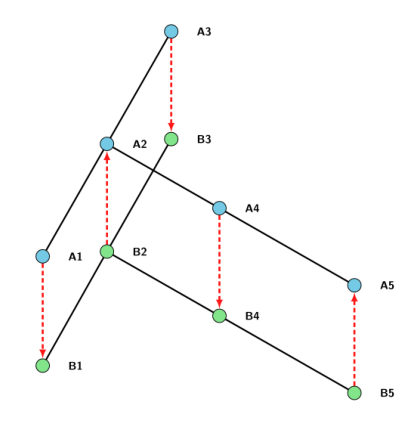
<figcaption class="paper-figure-caption"><b>Fig 1.</b> FIG. 2. Orientation rule for homogeneous (H) op- erations on a bipartite graph. The 5-qubit T-shaped graph is bipartite and can be partitioned into two disjoint vertex sets. To preserve the graph-state basis, homogeneous two-qubit gates must respect this bipartition: nodes in one partition apply the gate in one orientation, while nodes in the opposite partition apply the corresponding gate with reversed control–target direction. The allowed gate pairs implement- ing this rule are listed in Table I.</figcaption>
</figure>
<figure class="paper-figure-card">
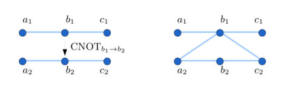
<figcaption class="paper-figure-caption"><b>Fig 2.</b> FIG. 1. Action of a CNOT gate on a graph state. When a CNOT gate is applied with control qubit i and target qubit j, the graph is transformed by toggling edges between the control vertex and each neighbor of the target vertex. Concretely, for every vertex (k ∈N(j)) with (k ̸= i), an edge (i, k) is added if it is absent and removed if it is present. All other edges remain unchanged.</figcaption>
</figure>
<figure class="paper-figure-card">
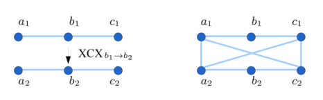
<figcaption class="paper-figure-caption"><b>Fig 3.</b> FIG. 3. Action of the XCX gate on a graph state. When an XCX gate is applied between qubits i and j, it induces a complementation between the neighborhoods of the two vertices. Specifically, for every pair of vertices (k ∈N(i)) and (l ∈N(j)), an edge (k, l) is added if it is absent and removed if it is present. All other edges remain unchanged.</figcaption>
</figure>
<figure class="paper-figure-card">
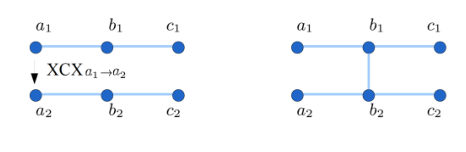
<figcaption class="paper-figure-caption"><b>Fig 4.</b> FIG. 4. Action of the XCX gate on a leaf vertex and its compensation by a CZ gate. Consider an XCX gate applied between qubits i and j, where i is a leaf vertex. Be- cause i has only one neighbor, the XCX operation induces only a single edge toggle between the corresponding neigh- boring vertices. In the configuration shown, this creates the additional edge (b1, b2). The extra edge can be removed by applying a CZ gate between b1 and b2, thereby restoring the original graph structure. Hence, when restricted to a leaf ver- tex, the effect of XCX can be exactly compensated by a CZ operation on the corresponding neighboring qubits, preserv- ing the graph state.</figcaption>
</figure>
<figure class="paper-figure-card">
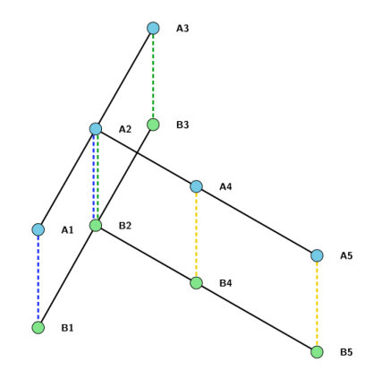
<figcaption class="paper-figure-caption"><b>Fig 5.</b> FIG. 5. Bilocal (B) operations on leaf vertices. The 5- qubit T-shaped graph state contains three leaf vertices. Each leaf together with its unique neighbor forms a pair on which a bilocal gate can act across the two copies of the state. Con- sequently, up to three B-group operations may be applied independently, one at each leaf-neighbor pair. For each such pair, the gate acting on the leaf qubit is chosen from the set listed in Table II, while the corresponding operation applied to the neighbor qubit follows the mapping given in Table III. Be- cause each leaf connects to the rest of the graph through a sin- gle edge, these bilocal operations remain confined to the cor- responding...</figcaption>
</figure>
</div>

<p><strong>Summary.</strong> This work develops a systematic framework to efficiently design entanglement distillation circuits for graph states by restricting gates to those that preserve the graph structure. By classifying these 'factorized graph-preserving' operations using concepts like Local Complementation orbits and Minimum Edge Representatives, the authors provide a scalable method superior to standard recurrence protocols under realistic noise conditions.</p>
<p><strong>Why it may be interesting.</strong> While focused on quantum computation, the rigorous topological classification of allowed operations (H/B groups) provides a powerful mathematical tool for understanding constraints in highly entangled many-body systems, which can inform theoretical models in condensed matter physics.</p>
<details>
<summary>Detailed structure</summary>
<p><strong>Main problem.</strong> Systematic entanglement distillation for arbitrary graph states is challenging due to the rapid growth of the circuit design space.</p>
<p><strong>Main result.</strong> The authors introduce factorized, graph-preserving Clifford operations and use Minimum Edge Representatives (MERs) over Local Complementation (LC) orbits to design scalable, topology-aware purification circuits that outperform standard protocols under noise.</p>
<p><strong>Method.</strong> They classify admissible gates into homogeneous (H) and bilocal (B) groups based on the underlying graph structure (bipartiteness or leaf vertices), allowing for a compact, factorized description of the gate set.</p>
<p><strong>Model / system.</strong> The system involves multipartite entangled graph states $|	ext{G}
angle$, which are fundamental to measurement-based quantum computation and stabilizer codes. The analysis focuses on operations that preserve this graph-state basis across local Clifford transformations.</p>
<p><strong>Key observables.</strong> Output fidelity ($F_{out}$), success probability, and the minimum number of edges in a Local Complementation (LC) orbit representative.</p>
<p><strong>Important parameters / regimes.</strong> Graph structure (bipartite vs. non-bipartite), presence of leaf vertices, input entanglement fidelity ($F$), and noise model parameters.</p>
<p><strong>Assumptions / limitations.</strong> The analysis assumes the ability to use MERs to provide a canonical representation for LC orbits, and that the gate set can be factorized into H and B components.</p>
<p><strong>Figures summary.</strong> Figures illustrate the action of CNOT gates on graph states (Fig. 1), the structure of homogeneous gates on bipartite graphs (Fig. 2), and how bilocal XCX operations at a leaf vertex can be compensated by a CZ gate to preserve the state basis (Fig. 4).</p>
<p><strong>Paper structure.</strong> The paper systematically introduces the problem, defines graph-preserving gates via H and B groups based on graph topology, establishes the framework using LC orbits and MERs for canonical representation, and finally applies this structure to optimize noisy distillation circuits.</p>
</details>
<details>
<summary>Abstract</summary>
<p>Graph states form a broad class of multipartite entangled states underlying measurement-based quantum computation, quantum networks, and stabilizer codes. However, systematic entanglement distillation for arbitrary graph states remains challenging because the circuit design space grows rapidly with the number of parties. We introduce a group of Clifford operations that we call "factorized graph-preserving". It enables us to efficiently enumerate and optimize graph-state purification circuits at finite size for realistic noisy hardware. These operations map products of graph-basis states to products of graph-basis states, so their action can be represented as permutations of graph-basis labels. Moreover, this useful gate set admits a compact factorized description determined by simple graph-theoretic features. This structure also allows, after some initial cached precomputation, drastically lower computational complexity for simulating a gate. We further organize these operations over local-complementation (LC) orbits using minimum-edge representatives (MERs), which let us design purification circuits that apply to all locally equivalent graph states (up to a basis change). Using this framework, we optimize noisy finite-size multipartite distillation circuits for several graph-state families. Numerical results show that the resulting graph-preserving circuits can outperform standard recurrence-based purification protocols under realistic gate and measurement noise. Our results establish LC-orbit structure and factorized graph-preserving operations as practical tools for scalable, topology-aware and hardware-constrained graph-state distillation protocol design. Our work can also be interpreted as a graph-based heuristic for finding transversal gates.</p>
</details>
<p><sub><a href="#top">↑ back to top</a></sub></p>

<p><a id="paper-2606.24451"></a></p>
<h3 id="from-continuous-time-random-walks-to-laplace-tails"><a href="http://arxiv.org/abs/2606.24451v1">From Continuous-Time Random Walks to Laplace Tails</a></h3>
<p><strong>Authors:</strong> Omer Hamdi, Stanislav Burov, Eli Barkai<br>
<strong>Type:</strong> theory · <strong>Category:</strong> statistical mechanics · <strong>PDF:</strong> <a href="https://arxiv.org/pdf/2606.24451v1">https://arxiv.org/pdf/2606.24451v1</a><br>
<strong>Analysis basis:</strong> full PDF text, analyzed in chunks
<strong>Topic relevance:</strong> <code>Keldysh / 2PI / non-Gaussian methods</code> <strong>3/5</strong> · <code>non-equilibrium dynamics</code> <strong>2/5</strong> · <code>methods for driven-dissipative</code> <strong>1/5</strong> · <code>non-equilibrium universality</code> <strong>1/5</strong></p>
<div class="figure-strip-hint">↔ Scroll figures horizontally</div>
<div class="paper-figures-scroll">
<figure class="paper-figure-card">
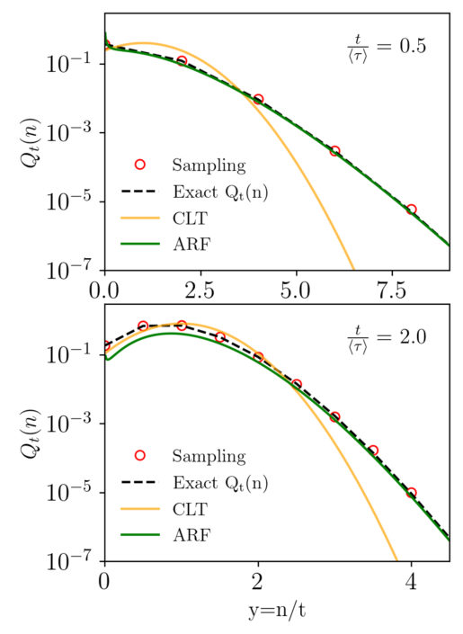
<figcaption class="paper-figure-caption"><b>Fig 1.</b> FIG. 1. Comparative analysis of Qt(n) for numerically sam- pled data using the Erlang distribution (red circles). The exact solution is detailed in the text (black dashed line), CLT predictions (orange line) as provided by Eq. (32), and our ARF approximation, produced by inserting Eq. (29) into Eq. (17) (green line). Plotted are two example cases with Erlang parameters k = 2, λ = 2, and 106 samples on a semi-log scale. Here, t/⟨τ⟩= 0.5 on top, and t/⟨τ⟩= 2 on the bottom. As we increase t, Qt(n) will converge to the normal distribution. However, for small values of t, we see a good agreement with the ARF theory.</figcaption>
</figure>
<figure class="paper-figure-card">
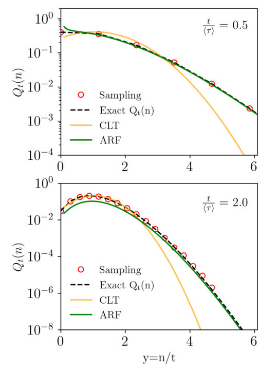
<figcaption class="paper-figure-caption"><b>Fig 2.</b> FIG. 2. Comparative analysis of Qt(n) as obtained for ψ(τ) in Eq. (33). The presented behavior is for numerically sam- pled data (red circles), exact solution from Eq. (B4) (black dashed line), CLT predictions (orange line), and our ARF approximation of Qt(n), produced by inserting Eq. (34) into Eq. (17) (green line). Plotted are two example cases with the parameters d1 = 5, λ1 = 1, λ2 = 3, and 106 samples. Here, t/⟨τ⟩= 0.5 on top, and t/⟨τ⟩= 2 on the bottom. As t increases, the empirical sampling converges to the CLT. For small t, we observe good agreement with the ARF theory.</figcaption>
</figure>
<figure class="paper-figure-card">
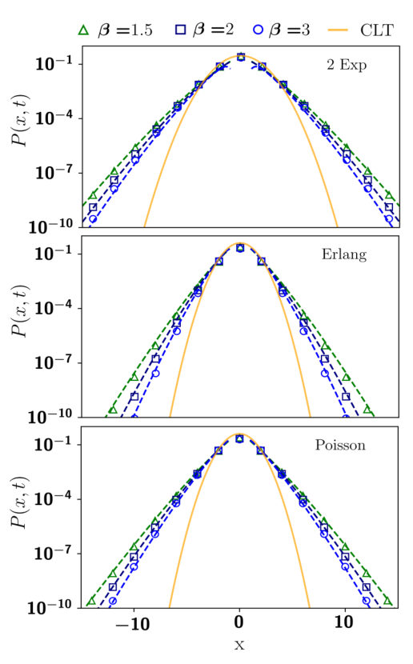
<figcaption class="paper-figure-caption"><b>Fig 3.</b> FIG. 3. Universality of exponential-like tails. Comparison of P(x, t) obtained from CTRW numerical convolution (sym- bols), and theoretical predictions; Eq. (47) in dashed lines, and CLT in orange lines. The waiting time PDFs are: Eq. (33) (double exponential) with parameters λ1 = 1, λ2 = 3, d1 = 5 (top), Eq. (27) (Erlang) with parameters k = 2, λ = 4 (mid- dle), and Eq. (5) (the classic Poisson case) with λ = 1 (bot- tom). For all those cases, we choose t/⟨τ⟩= 1, i.e., we focus on the scale where a particle jumps on average only once. Notice the large deviations from the traditional CLT and the nearly exponential tails accurately describing the system without fitting. Regardless of β, the...</figcaption>
</figure>
<figure class="paper-figure-card">
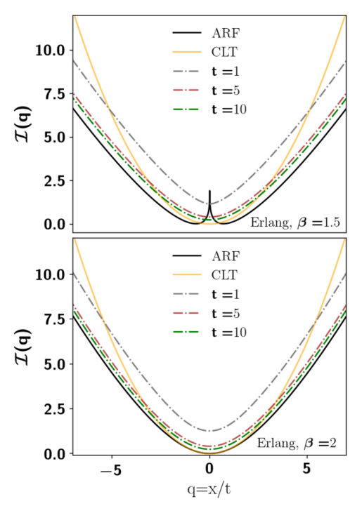
<figcaption class="paper-figure-caption"><b>Fig 4.</b> FIG. 4. Using numerical solution of the CTRW presented in Sec. V A, we plot the rate function for P(x, t). For three finite t we plot −log[P(x, t)]/t versus q = x/t. The numerical results are presented by dashed lines while analytical form of the rate function is provided for the CLT approximation via Eq. (36) (orange line) and for the ARF via Eq. (47) (black line). For the PDF of the waiting times we used Eq. (27) (Erlang) with parameters k = 2, λ = 4, while the jump dis- tribution follows Eq. (44) with β = 1.5, 2. For large enough t, the ARF is the dominating behavior in the tails, while the CLT is dominating in the center.</figcaption>
</figure>
<figure class="paper-figure-card">
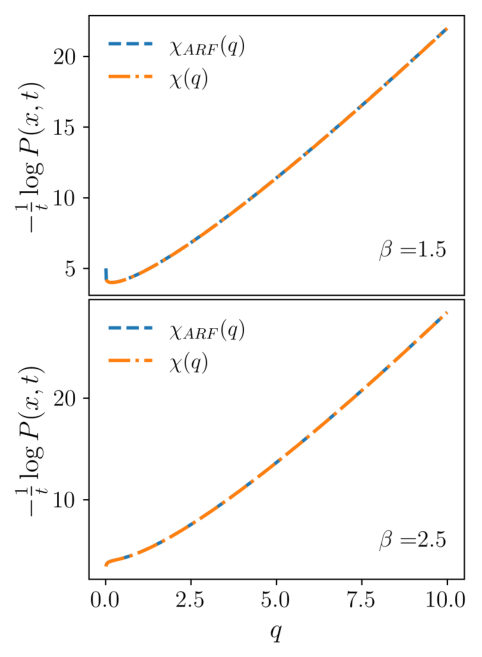
<figcaption class="paper-figure-caption"><b>Fig 5.</b> FIG. 5. Comparison of the rate function of P(x, t) obtained by our method using χARF(q) from Eq. (48) (blue dashed) and by the formalism of Ref. [69], described by Eq. (65) (orange dash-dotted). The parameters are: A = 5, CA = 1, CA+1 = −5, with β = 1.5 (top) and β = 2.5 (bottom). For both values of β, we see a good fit between the two approaches.</figcaption>
</figure>
</div>

<p><strong>Summary.</strong> This work rigorously analyzes the probability distribution of particle displacements in Continuous-Time Random Walks (CTRWs), showing that while typical fluctuations follow Gaussian statistics, rare events exhibit pronounced Laplace tails. By developing a rate function framework valid at finite times, the authors provide a powerful theoretical tool to characterize anomalous diffusion in complex media.</p>
<p><strong>Why it may be interesting.</strong> The robust derivation of non-Gaussian tails (Laplace tails) in a fundamental transport model like CTRW provides insights into anomalous diffusion regimes relevant to complex biological or glassy systems, which is crucial for understanding energy/particle transport dynamics beyond simple Brownian motion.</p>
<details>
<summary>Detailed structure</summary>
<p><strong>Main problem.</strong> The study investigates the deviation of particle displacement distributions from the expected Gaussian behavior (Brownian motion) in complex media, focusing on the emergence of pronounced exponential decay known as Laplace tails.</p>
<p><strong>Main result.</strong> The probability density function $P(x, t)$ for displacements in Continuous-Time Random Walks exhibits Laplace tails in the large spatial separation limit ($|x| 	o \infty$), which is quantified by a rate function $\chi_{ARF}(q)$.</p>
<p><strong>Method.</strong> The analysis employs advanced techniques from Large Deviation Theory (LDT), utilizing saddle point approximations and developing rate function-like frameworks for both the positional PDF $P(x, t)$ and the renewal probability $Q_t(n)$.</p>
<p><strong>Model / system.</strong> The model is the Continuous-Time Random Walk (CTRW), which describes particle diffusion in complex environments like glasses or living cells. The process is governed by random waiting times $\psi(	au)$ and subsequent jumps.</p>
<p><strong>Key observables.</strong> $P(x, t)$ (positional PDF), $Q_t(n)$ (probability of exactly $n$ renewals), and the associated rate functions ($I(y)$ or $\chi(q)$).</p>
<p><strong>Important parameters / regimes.</strong> Time $t$, spatial separation $|x|$, ratio $q=x/t$, and parameters defining the waiting time distribution $\psi(	au)$.</p>
<p><strong>Assumptions / limitations.</strong> The analysis relies on developing rate function frameworks valid for finite times, extending beyond standard asymptotic LDT results. Approximations are made using saddle point methods and Taylor expansions of $\psi(	au)$ near $  au=0$.</p>
<p><strong>Figures summary.</strong> Figures compare $Q_t(n)$ across different waiting time PDFs (Erlang, sum of two exponentials) against CLT predictions and the derived Asymptotic Rate Function (ARF), demonstrating matching tail behavior. Other figures plot $P(x, t)$ showing convergence to Laplace tails.</p>
<p><strong>Paper structure.</strong> The paper develops a rate function framework for $Q_t(n)$, analyzes the large deviation regime ($y=n/t$), and then extends this formalism to derive the propagator $P(x, t)$. The core is comparing theoretical predictions (ARF) against known limits (CLT) and numerical simulations across various time scales.</p>
</details>
<details>
<summary>Abstract</summary>
<p>During Brownian motion, the displacement is normally distributed, a classical fact aligned with the central limit theorem. However, single particle tracking in complex media such as glasses, living cells, and colloidal suspensions often reveals pronounced exponential decay of the displacement distribution, known as Laplace tails. In a short letter, two of us presented the emergence of Laplace tails in the continuous time random walk (CTRW) framework. Here, a detailed complementary study is presented. By exploring the behavior of $Q_t(n)$, the probability that exactly $n$ renewals occur during time $t$, we develop a rate function-like framework for this quantity, valid for finite $t$. We show that $Q_t(n)$ exhibits exponential tails, which in turn give rise to exponential tails of the positional probability density function $P(x,t)$. Favorable comparison to finite-time numerical simulations and asymptotic large deviation rate functions establishes the validity of our results over a wide temporal range.</p>
</details>
<p><sub><a href="#top">↑ back to top</a></sub></p>

<p><a id="paper-2606.23777"></a></p>
<h3 id="connecting-quantum-tomography-and-quantum-retrodiction"><a href="http://arxiv.org/abs/2606.23777v1">Connecting Quantum Tomography and Quantum Retrodiction</a></h3>
<p><strong>Authors:</strong> Sebastian Murk, Ian Tan, Fabian Müller, Dominik Šafránek<br>
<strong>Type:</strong> theory · <strong>Category:</strong> quantum information and computing · <strong>PDF:</strong> <a href="https://arxiv.org/pdf/2606.23777v1">https://arxiv.org/pdf/2606.23777v1</a><br>
<strong>Analysis basis:</strong> full PDF text, analyzed in chunks
<strong>Topic relevance:</strong> <code>quantum measurements</code> <strong>3/5</strong> · <code>Keldysh / 2PI / non-Gaussian methods</code> <strong>1/5</strong> · <code>entanglement &amp; information structure</code> <strong>1/5</strong> · <code>measurement-induced transitions</code> <strong>1/5</strong></p>
<div class="figure-strip-hint">↔ Scroll figures horizontally</div>
<div class="paper-figures-scroll">
<figure class="paper-figure-card">
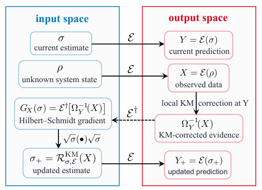
<figcaption class="paper-figure-caption"><b>Fig 1.</b> FIG. 1. Schematic representation of the KM update. The current estimate σ predicts Y = E(σ), while the data define an output-space evidence operator X; ideally, X = E(ρ). The inverse KM action at Y gives the corrected evidence Ω−1 Y (X), which is pulled back through E† to the Hilbert–Schmidt gradient GX(σ). Conjugation by √σ produces the positive state update σ+ = RKM σ,E(X), with updated prediction Y+ = E(σ+).</figcaption>
</figure>
<figure class="paper-figure-card">
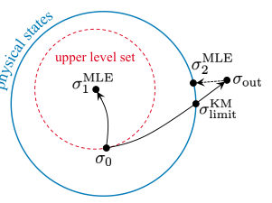
<figcaption class="paper-figure-caption"><b>Fig 2.</b> FIG. 2. The KM iteration converges locally to the maximum- likelihood estimator (MLE), provided the initial prior is sufficiently close. Otherwise, it may instead follow the log-likelihood gradient to a boundary point rather than the MLE, for example, when finite data make the observations incompatible with any physical state.</figcaption>
</figure>
<figure class="paper-figure-card">
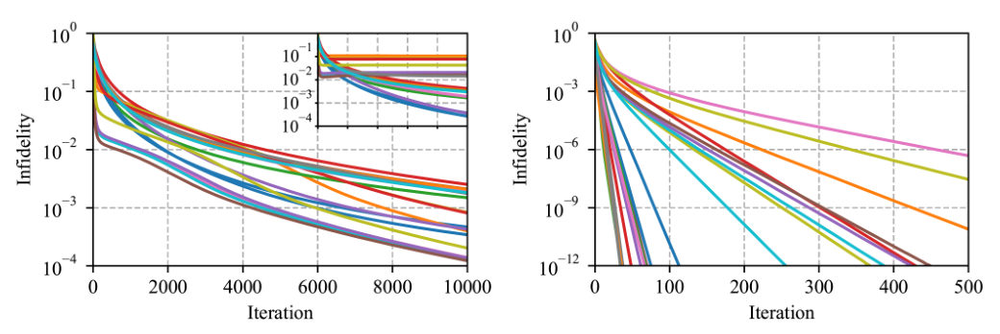
<figcaption class="paper-figure-caption"><b>Fig 3.</b> FIG. 3. Left: Maximum-likelihood quantum tomography based on iterative application of the weighted Petz map over Pauli bases, with the prior initialized as the maximally mixed state. Twenty states of six qubits of varying rank were randomly generated (including 20% pure states), and regularized to make them full-rank, ρ = (1 −ϵ)ρ + ϵI/d, ϵ = 10−2. We show the stabilized iteration (δ = 10−7) and the unstabilized case (δ = 0) in the inset. Right: Tomography of a qubit via iterative unstabilized KM updates in a Stinespring setup with three overcomplete, incompatible channels defined by a random unitary U, using otherwise identical settings. The method converges faster for highly mixed states....</figcaption>
</figure>
</div>

<p><strong>Summary.</strong> This work unifies quantum tomography and retrodiction by demonstrating that they are governed by the same underlying principle: maximizing the log-likelihood of measurement outcomes. The authors derive a generalized Kubo–Mori update, showing it relates directly to the Petz recovery map, thereby providing a robust, gradient-based framework for state reconstruction in quantum systems.</p>
<p><strong>Why it may be interesting.</strong> It provides a rigorous mathematical link between fundamental concepts in quantum estimation theory (tomography/retrodiction) using modern tools from information geometry and optimization.</p>
<details>
<summary>Detailed structure</summary>
<p><strong>Main problem.</strong> The paper unifies quantum tomography (state reconstruction) and quantum retrodiction (inferring past states) by showing they stem from a single underlying principle.</p>
<p><strong>Main result.</strong> It proves that the Petz recovery map is mathematically equivalent to the gradient update used in maximum-likelihood quantum tomography, establishing a general framework for state estimation.</p>
<p><strong>Method.</strong> The authors employ techniques from information geometry and optimization theory, deriving iterative updates (KM update) based on maximizing the log-likelihood functional of measurement data.</p>
<p><strong>Model / system.</strong> The analysis is performed on general quantum channels $E$ acting on density matrices $
ho$, applicable to various measurement scenarios including quantum-to-classical measurements.</p>
<p><strong>Key observables.</strong> Log-likelihood functional $L_X(\sigma)$, Petz recovery map ($\mathcal{R}_{\sigma, E}(X)$), and the Kubo–Mori (KM) update ($\mathcal{R}_{	ext{KM}}$).</p>
<p><strong>Important parameters / regimes.</strong> The degree of non-commutativity between measured observables ($[E(\sigma), X]$) dictates the difference between the Petz map and the KM update.</p>
<p><strong>Assumptions / limitations.</strong> Assumes conditions ensuring positive evidence ($X \ge 0$) and that the output state is invertible or well-behaved for gradient calculations.</p>
<p><strong>Figures summary.</strong> Figures illustrate the schematic process of the KM update, showing how evidence leads to a corrected estimate, and demonstrate convergence towards the Maximum Likelihood Estimator (MLE) in various setups.</p>
<p><strong>Paper structure.</strong> The paper builds from defining the MLE problem, deriving the gradient-based KM update, establishing its relationship to the Petz map via non-commutativity terms, and finally proving monotonicity properties for both updates.</p>
</details>
<details>
<summary>Abstract</summary>
<p>Quantum tomography and quantum retrodiction are traditionally viewed as separate inference tasks: tomography reconstructs quantum states from measurement data, whereas retrodiction infers past quantum states from observed outcomes. We show that the two are manifestations of the same underlying principle. We prove that the Petz recovery map associated with a measurement channel is precisely the gradient update of the log-likelihood used in maximum-likelihood tomography. Consequently, repeated applications of the Petz map monotonically increase the likelihood. Extending beyond measurement channels, we derive a noncommutative generalization of the Petz map from the gradient of a generalized likelihood for arbitrary quantum channels. The resulting iterative procedure maximizes the likelihood and provides a general framework for quantum tomography, establishing a direct bridge between retrodiction, recovery maps, and statistical inference.</p>
</details>
<p><sub><a href="#top">↑ back to top</a></sub></p>

<p><a id="paper-2606.23823"></a></p>
<h3 id="wavelet-matrix-product-states-for-quantum-fields"><a href="http://arxiv.org/abs/2606.23823v1">Wavelet Matrix Product States for Quantum Fields</a></h3>
<p><strong>Authors:</strong> Molly Kaplan, Antoine Tilloy<br>
<strong>Type:</strong> theory · <strong>Category:</strong> numerical methods · <strong>PDF:</strong> <a href="https://arxiv.org/pdf/2606.23823v1">https://arxiv.org/pdf/2606.23823v1</a><br>
<strong>Analysis basis:</strong> full PDF text, analyzed in chunks
<strong>Topic relevance:</strong> <code>methods for driven-dissipative</code> <strong>3/5</strong> · <code>Keldysh / 2PI / non-Gaussian methods</code> <strong>1/5</strong> · <code>analog quantum simulation</code> <strong>1/5</strong></p>
<div class="figure-strip-hint">↔ Scroll figures horizontally</div>
<div class="paper-figures-scroll">
<figure class="paper-figure-card">
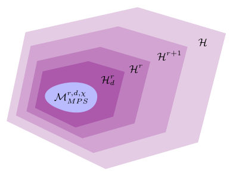
<figcaption class="paper-figure-caption"><b>Fig 1.</b> FIG. 1. The variational manifold. From the full Hilbert space H, we first reduce our consideration to Hr, the Fock space of resolution r scaling modes at each site. We see that this space lies inside Hr+1, and all higher resolution Hilbert spaces. Fur- ther reduction to Hr d truncates each Fock space to d −1 ex- citations. Finally, we further reduce to the MPS submanifold Mr,d,χ MPS.</figcaption>
</figure>
<figure class="paper-figure-card">
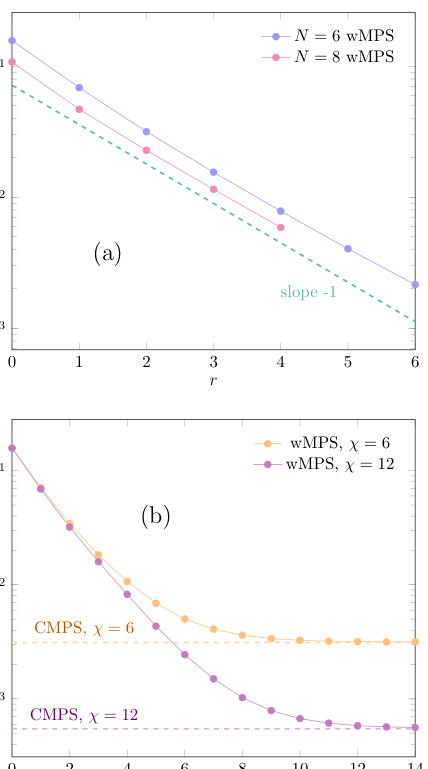
<figcaption class="paper-figure-caption"><b>Fig 2.</b> FIG. 2. Relative error in the wMPS ground state energy density as a function of the resolution r, for the Lieb-Liniger model with µ = 1, c = 8 and an MPS with d = 3 states in the Fock space on each physical leg. (a) We compare N = 6 and N = 8 wavelet MPS with bond dimension χ = 16, which both scale linearly with the lattice spacing. (b) We compare results for wMPS with bond dimension χ = 6, 12, and larger r for N = 6, to witness the saturation as a function of r to the CMPS values. For r ≥5, the optimization is done with the iterative refinement method of sec. IV.</figcaption>
</figure>
<figure class="paper-figure-card">
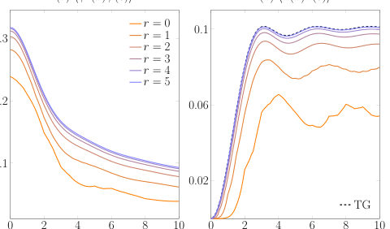
<figcaption class="paper-figure-caption"><b>Fig 3.</b> FIG. 3. Observables in the wMPS ground state with µ = 1, χ = 16, d = 3, at different resolutions, near the Tonks- Girardeau limit at c = 200.</figcaption>
</figure>
<figure class="paper-figure-card">
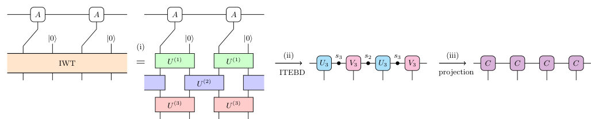
<figcaption class="paper-figure-caption"><b>Fig 4.</b> FIG. 4. Illustration of the three steps of the refinement algorithm: (i) writing the inverse wavelet transform as a brick-wall circuit, (ii) contracting it with ITEBD, (iii) projecting onto translation invariant MPSs.</figcaption>
</figure>
<figure class="paper-figure-card">
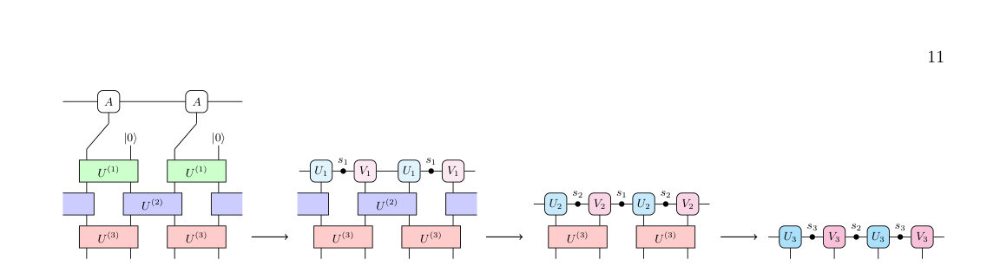
<figcaption class="paper-figure-caption"><b>Fig 5.</b> FIG. 5. Contraction of the original MPS with three layers of the IWT brick-wall circuit into an MPS with a larger unit cell using ITEBD, which corresponds to step (ii) of our refinement algorithm.</figcaption>
</figure>
</div>

<p><strong>Summary.</strong> The paper introduces Wavelet Matrix Product States (wMPS) as a novel, highly accurate variational method for solving continuous Quantum Field Theories. By leveraging the multi-resolution properties of Daubechies wavelets, it allows systematic refinement of approximations without needing explicit lattice discretization. This technique is shown to accurately compute key observables like energy density and correlation functions for models such as the Lieb-Liniger system.</p>
<p><strong>Why it may be interesting.</strong> This work provides a powerful, systematic numerical tool for studying continuum quantum systems that avoids the pitfalls of standard lattice discretization, offering variational bounds on ground state energies relevant to many-body physics.</p>
<details>
<summary>Detailed structure</summary>
<p><strong>Main problem.</strong> The primary goal is developing a variational method to solve continuum quantum field theories (QFT) by mapping them onto discrete tensor network representations.</p>
<p><strong>Main result.</strong> The authors demonstrate that using Wavelet Matrix Product States (wMPS) with Daubechies wavelets allows for systematic, highly accurate approximation of QFT ground states, showing convergence towards Continuous MPS results.</p>
<p><strong>Method.</strong> They employ a variational approach utilizing wMPS, which are built on wavelet bases and optimized iteratively through multi-resolution analysis to approximate the continuum Fock space.</p>
<p><strong>Model / system.</strong> The method is applied to continuum quantum models like the Lieb-Liniger model of non-relativistic bosons. The Hamiltonian involves kinetic and four-point interaction terms derived from the wavelets.</p>
<p><strong>Key observables.</strong> Energy density, two-point correlation functions, and density-density correlators are computed to track convergence.</p>
<p><strong>Important parameters / regimes.</strong> The resolution scale ($r$) of the wavelets, the bond dimension ($\chi$), and the Daubechies function order ($N \geq 6$).</p>
<p><strong>Assumptions / limitations.</strong> The method assumes the Hamiltonian is local and that the state can be accurately approximated by a tensor product structure derived from the wavelet basis; it relies on the inclusion property of the chosen wavelets.</p>
<p><strong>Figures summary.</strong> Figures illustrate the reduction sequence of the Hilbert space ($\mathcal{H} 	o \mathcal{H}_r 	o 	ext{MPS manifold}$), show energy density convergence vs. resolution $r$, and compare optimization routines with and without iterative refinement.</p>
<p><strong>Paper structure.</strong> The paper builds mathematically by establishing the necessary properties for a suitable wavelet basis (Daubechies functions) to ensure variationality and inclusion. It then details the construction of the Hamiltonian in terms of local coefficients ($K, \Gamma_4$) and presents an iterative algorithm involving Inverse Wavelet Transforms ($  ext{IWT}$) followed by $    ext{ITEBD}$ contraction and projection.</p>
</details>
<details>
<summary>Abstract</summary>
<p>We introduce a variational method to solve continuum quantum models with discrete tensor network techniques. The method leverages wavelet matrix product states (wMPS): matrix product states built on top of sufficiently regular ($N\geq 6$) Daubechies scaling functions. These states live in the continuum field theory Fock space, have finite energy density, and can be optimized with standard algorithms, without restriction to free theories. Further, exploiting the multi-resolution analysis built into wavelets, and its quantum circuit description, we can iteratively refine wMPS to obtain accurate approximations at arbitrarily fine length-scales. We showcase the efficiency of the method on the Lieb-Liniger model, computing energy density and correlation functions.</p>
</details>
<p><sub><a href="#top">↑ back to top</a></sub></p>

<p><a id="paper-2606.24170"></a></p>
<h3 id="low-spatial-cost-ccz-magic-state-factory"><a href="http://arxiv.org/abs/2606.24170v1">Low Spatial Cost CCZ Magic State Factory</a></h3>
<p><strong>Authors:</strong> Sungyeon Kook, Yujin Kang, Ilkwon Sohn, Jun Heo<br>
<strong>Type:</strong> theory · <strong>Category:</strong> quantum information and computing · <strong>PDF:</strong> <a href="https://arxiv.org/pdf/2606.24170v1">https://arxiv.org/pdf/2606.24170v1</a><br>
<strong>Analysis basis:</strong> full PDF text, analyzed in chunks
<strong>Topic relevance:</strong> <code>quantum measurements</code> <strong>3/5</strong> · <code>measurement-induced transitions</code> <strong>1/5</strong></p>
<div class="figure-strip-hint">↔ Scroll figures horizontally</div>
<div class="paper-figures-scroll">
<figure class="paper-figure-card">
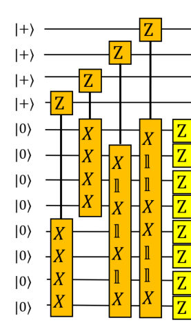
<figcaption class="paper-figure-caption"><b>Fig 1.</b> Fig. 1 Initial [[8, 3, 2]] CCZ magic state distillation circuit before Pauli rotation conversion.</figcaption>
</figure>
<figure class="paper-figure-card">
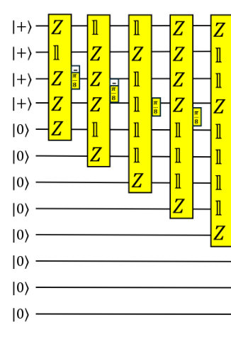
<figcaption class="paper-figure-caption"><b>Fig 2.</b> Fig. 2 [[8, 3, 2]] CCZ distillation circuit after Pauli-rotation conversion. The non-Clifford operations are represented as Z-basis π/8 Pauli-product rotations.</figcaption>
</figure>
<figure class="paper-figure-card">
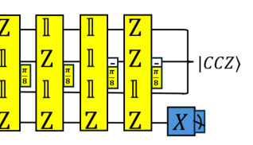
<figcaption class="paper-figure-caption"><b>Fig 3.</b> Fig. 3 Reduced four-qubit [[8, 3, 2]] CCZ distillation circuit obtained after removing the redundant |0⟩auxiliary qubits.</figcaption>
</figure>
<figure class="paper-figure-card">
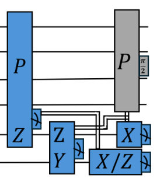
<figcaption class="paper-figure-caption"><b>Fig 4.</b> Fig. 4 π/8 joint measurement consumes an |A⟩ancilla and a |0⟩ancilla, and uses the joint mea- surements PLZA and ZAY0 to implement a Pauli product π/8 rotation up to Pauli frame correction.</figcaption>
</figure>
<figure class="paper-figure-card">
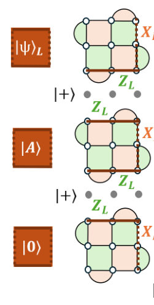
<figcaption class="paper-figure-caption"><b>Fig 5.</b> Fig. 5 Four qubit twisted ZY measurement used to implement the ZAY0 joint measurement. The three patches on the left represent the data patch |ψ⟩L, the magic state ancilla patch |A⟩, and the auxiliary patch |0⟩, respectively. The surface code patches are illustrated for code distance d = 3. Green and peach regions denote Z and X stabilizers, respectively. The solid brown boundaries indicate the rough boundaries associated with logical ZL operators, whereas the dashed brown boundaries indicate the smooth boundaries associated with logical XL operators. White circles represent data qubits, and gray circles indicate qubits used during the joint measurement construction. On the right, the...</figcaption>
</figure>
</div>

<p><strong>Summary.</strong> The paper presents a novel design framework to drastically reduce the physical space required for generating essential magic states like CCZ and T states in surface code quantum computation. By converting complex gate operations into efficient joint measurements and utilizing specialized four-qubit twisted syndrome measurements, they achieve substantial resource savings while maintaining high error suppression capabilities.</p>
<p><strong>Why it may be interesting.</strong> This work is highly relevant as it directly addresses hardware constraints (physical qubit count) in scaling quantum computers. The techniques developed—especially the Pauli rotation conversion and compact measurement implementation—provide concrete engineering blueprints for building fault-tolerant modules.</p>
<details>
<summary>Detailed structure</summary>
<p><strong>Main problem.</strong> The primary goal is to reduce the physical resource cost, specifically the spatial footprint, required for implementing magic state distillation protocols within a surface code architecture.</p>
<p><strong>Main result.</strong> The authors propose a framework that reduces the spatial cost of generating CCZ and T magic states by converting gate-based circuits into compact joint measurement architectures using four-qubit twisted measurements. This results in significant resource savings compared to previous designs.</p>
<p><strong>Method.</strong> They convert complex, gate-based distillation protocols (like [[8, 3, 2]] CCZ) into sequences of Pauli rotation joint measurements ($\pi/8$ rotations). Redundant auxiliary qubits are eliminated by exploiting the trivial action of Z-type operators on $|0
angle$ states.</p>
<p><strong>Model / system.</strong> The work is situated in the context of fault-tolerant quantum computation using the surface code. The system models the distillation process for non-Clifford resource states, specifically focusing on CCZ and T magic states, which are essential for universal quantum computation beyond Clifford gates.</p>
<p><strong>Key observables.</strong> Spatial cost (reduced from $396d^2$ to $113d^2$), output error rates ($p_{1,	ext{CCZ}} \simeq 96p_L + 28p_T^2$), and the ability to maintain single-fault detection.</p>
<p><strong>Important parameters / regimes.</strong> Code distance ($d$), input magic state error rate ($p_T$), logical memory error probability ($p_L$), and the specific distillation protocol parameters (e.g., [[8, 3, 2]] for CCZ).</p>
<p><strong>Assumptions / limitations.</strong> The analysis assumes independent error sources between logical memory errors and input magic state errors. Furthermore, it relies on the ability to implement required measurements using local twist regions, keeping ancilla patches compact.</p>
<p><strong>Figures summary.</strong> Figures illustrate the transformation from initial gate-based circuits (Fig 1) to measurement-based ones (Fig 2), showing the final reduced four-qubit circuit (Fig 3). Later figures detail the implementation of the key twisted ZY measurement and compare resource costs across different factory designs.</p>
<p><strong>Paper structure.</strong> The paper first introduces the problem of high spatial cost in magic state factories. It then details the methodology: converting gate circuits to Pauli rotation measurements, followed by implementing these measurements using novel four-qubit twisted syndrome measurements. Finally, it presents quantitative comparisons showing significant resource reduction for both CCZ and T state factories.</p>
</details>
<details>
<summary>Abstract</summary>
<p>We propose a design framework for reconstructing gate-based magic state distillation protocols as compact joint-measurement architectures implementable with the surface code. The goal is to reduce the surface-code resource cost of a magic state factory while preserving the logical function and error-detection structure of the distillation protocol. We construct a reduced architecture for implementing an eight-to-three CCZ distillation protocol using smaller surface-code patches. The proposed factory preserves the single-fault-detection property and the leading-order error suppression of the protocol, while producing CCZ magic states with lower spatial cost than the design of Gidney and Fowler. The proposed design perspective can also be applied to T-state factories and other multiqubit non-Clifford resource-state factories. Our approach provides a framework for extending the design space of surface-code magic state factories beyond a single CCZ layout optimization.</p>
</details>
<p><sub><a href="#top">↑ back to top</a></sub></p>

<p><a id="paper-2606.23994"></a></p>
<h3 id="probing-the-pairing-symmetry-of-moire-graphene-superconductors"><a href="http://arxiv.org/abs/2606.23994v1">Probing the pairing symmetry of moiré graphene superconductors</a></h3>
<p><strong>Authors:</strong> Sayak Biswas, Rajdeep Sensarma, Mohit Randeria<br>
<strong>Type:</strong> theory · <strong>Category:</strong> strongly correlated electrons · <strong>PDF:</strong> <a href="https://arxiv.org/pdf/2606.23994v1">https://arxiv.org/pdf/2606.23994v1</a><br>
<strong>Analysis basis:</strong> full PDF text, analyzed in chunks
<strong>Topic relevance:</strong> <code>Keldysh / 2PI / non-Gaussian methods</code> <strong>2/5</strong> · <code>analog quantum simulation</code> <strong>2/5</strong> · <code>methods for driven-dissipative</code> <strong>2/5</strong> · <code>spintronics-quantum-optics interface</code> <strong>2/5</strong> · <code>correlated / nonlocal dissipation</code> <strong>1/5</strong> · <code>driven-dissipative phase transition</code> <strong>1/5</strong> · <code>entanglement &amp; information structure</code> <strong>1/5</strong> · <code>exotic spin models in light-matter</code> <strong>1/5</strong> · <code>non-equilibrium dynamics</code> <strong>1/5</strong></p>
<div class="figure-strip-hint">↔ Scroll figures horizontally</div>
<div class="paper-figures-scroll">
<figure class="paper-figure-card">
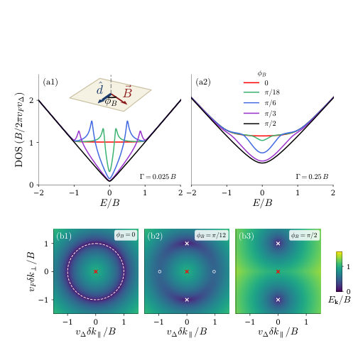
<figcaption class="paper-figure-caption"><b>Fig 1.</b> FIG. 1. Low-energy DOS in a Zeeman field for triplet pairing. (a1) Variation of the DOS N(E) with the angle ϕB between ⃗B and ˆd. N(E) ∼|E| is nodal for ϕB = π/2, whereas it is finite with N(0) ∼B when ϕB = 0. For 0 &lt; ϕB &lt; π/2, the DOS remains nodal and exhibits low-energy van Hove singularities at E = ±B sin ϕB; see text. (a2) These singularities are wiped out by a broadening Γ, but N(0) shows a variation with ϕB. (b1–b3) Evolution of the nodes in the Bogoliubov spectrum (6). The zero-field node is at (0, 0) (red cross). For ϕB = 0, the nodes are a (white dashed) circle of radius B in the (v∆δk∥, vF δk⊥)-plane; see text. For ϕB ̸= 0, there are only two point nodes (white crosses). For 0 &lt;...</figcaption>
</figure>
<figure class="paper-figure-card">
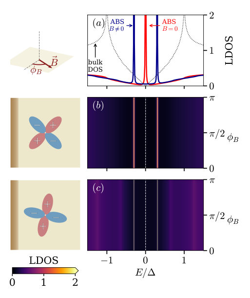
<figcaption class="paper-figure-caption"><b>Fig 2.</b> FIG. 2. Isotropic Zeeman splitting of ABS for singlet pairing. (a) LDOS near the boundary shows a E = 0 peak arising from Andreev bound states (ABS) which splits into two peaks at E = ±B in a field. These LDOS are contrasted with the bulk DOS. (b,c) The ABS splitting is independent of the direction ϕB of the in-plane field ⃗B as seen from the false-color plots of the LDOS as a function of E and ϕB for two orientations of the d-wave order parameter with respect to the interface: (b) ∆cos (2θk −π/2) and (c) ∆cos (2θk −π/8). B = 0.3∆and all LDOS are calculated at a small distance 0.2π/kF from the interface; see text.</figcaption>
</figure>
<figure class="paper-figure-card">
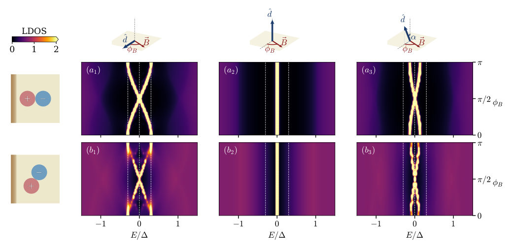
<figcaption class="paper-figure-caption"><b>Fig 3.</b> FIG. 3. Anisotropic Zeeman splitting of ABS for triplet pairing. The LDOS near the boundary plotted as a function of E and the in-plane field ⃗B direction ϕB for three orientations of ˆd. (1) In-plane ˆd, (2) out-of-plane ˆd, and (3) ˆd at an angle α = π/6 with respect to the normal to the plane. Results are shown for two different orientations of the p-wave order parameter: (a) ∆cos (θk) and (b) ∆cos (θk −π/3). In (a1,b1) the ABS splits into two peaks at E = ±B when ⃗B ∥ˆd (ϕB = 0), while there is no splitting when ⃗B ⊥ˆd (ϕB = π/2). In (a2,b2), ˆd is always perpendicular to ⃗B, and hence there is no splitting. In (a3,b3), the magnitude of the splitting lies between those in cases (1) and...</figcaption>
</figure>
</div>

<p><strong>Summary.</strong> This work theoretically distinguishes between singlet and triplet superconducting pairing symmetries in moiré graphene by predicting distinct signatures. The authors leverage symmetry constraints and model both bulk quasiparticle excitations and interface-bound Andreev states. Observing the Zeeman field response of these two types of probes offers a definitive experimental pathway to characterize the underlying pairing mechanism.</p>
<p><strong>Why it may be interesting.</strong> While focused on condensed matter superconductivity, the use of topological protection in Andreev bound states and the detailed analysis of spin/momentum dependence under external fields provides rich theoretical tools applicable to understanding exotic quantum phases in engineered systems.</p>
<details>
<summary>Detailed structure</summary>
<p><strong>Main problem.</strong> The primary goal is to definitively determine the pairing symmetry (singlet vs. triplet) of superconductivity in moiré graphene superconductors, and if triplet, to identify the direction of the d-vector.</p>
<p><strong>Main result.</strong> Distinct signatures are predicted for singlet versus triplet pairing when probing the superconducting state using Zeeman fields applied either to bulk quasiparticles or at superconductor/insulator interfaces via Andreev bound states (ABS).</p>
<p><strong>Method.</strong> The analysis combines symmetry constraints ($\mathcal{T}, C_{2z}$) with theoretical modeling of the Bogoliubov-de Gennes Hamiltonian, analyzing both low-energy Density of States (DOS) and phase-sensitive ABS spectroscopy.</p>
<p><strong>Model / system.</strong> The system is magic-angle moiré graphene superconductors operating on the hole-doped side of $
u = -2$, characterized by a normal state constrained by an Incommensurate Kekulé Spiral (IKS).</p>
<p><strong>Key observables.</strong> Low-energy Density of States $N(E)$ under Zeeman field, and the splitting/behavior of topologically protected Andreev Bound States (ABS) at interfaces.</p>
<p><strong>Important parameters / regimes.</strong> Zeeman field orientation ($\vec{B}$ relative to $\hat{d}$), doping level, and proximity to nodal superconductivity.</p>
<p><strong>Assumptions / limitations.</strong> The analysis assumes robustness in the low-energy limit, relies on symmetry constraints derived from the IKS normal state, and models ABS using a smooth interface approximation.</p>
<p><strong>Figures summary.</strong> Figures illustrate the Zeeman splitting of zero-field ABS peaks for singlet pairing (splitting to $\pm B$) versus the angle-dependent splitting observed for triplet pairing ($\vec{B} \parallel \hat{d}$ vs. $\vec{B} \perp \hat{d}$).</p>
<p><strong>Paper structure.</strong> The paper systematically constrains the order parameter using symmetry arguments, develops theoretical predictions for two key experimental probes (bulk DOS and interface ABS), and contrasts the expected signatures for singlet versus triplet pairing.</p>
</details>
<details>
<summary>Abstract</summary>
<p>The pairing symmetry of magic-angle moiré graphene is a fundamental question that remains unresolved. Combining experimental and theoretical inputs, we constrain the superconducting order parameters that can emerge from the incommensurate Kekulé spiral (IKS) normal state on the hole-doped side of $ν= -2$. Imposing the additional experimental constraint of nodal superconductivity, we are left with the task of distinguishing between singlet or triplet pairing, and of determining the d-vector in the latter case. We propose definitive tests to identify the pairing symmetry based on two classes of experiments using the response of the superconducting state to Zeeman field orientation. The first set of predictions is for spectroscopic and thermodynamic measurements sensitive to low-energy excitations near the nodes. The second set is for phase-sensitive measurements of topologically protected Andreev bound states near boundaries, whose spectroscopy is shown to provide a smoking gun signature of the pairing symmetry.</p>
</details>
<p><sub><a href="#top">↑ back to top</a></sub></p>

<p><a id="paper-2606.24376"></a></p>
<h3 id="the-physics-of-topological-defects-in-glasses"><a href="http://arxiv.org/abs/2606.24376v1">The Physics of Topological Defects in Glasses</a></h3>
<p><strong>Authors:</strong> Arabinda Bera, Peter Schall, Timothy W. Sirk, Vijayakumar Chikkadi, Alessio Zaccone<br>
<strong>Type:</strong> both · <strong>Category:</strong> disordered systems and neural networks · <strong>PDF:</strong> <a href="https://arxiv.org/pdf/2606.24376v1">https://arxiv.org/pdf/2606.24376v1</a><br>
<strong>Analysis basis:</strong> full PDF text, analyzed in chunks
<strong>Topic relevance:</strong> <code>driven-dissipative phase transition</code> <strong>2/5</strong> · <code>non-equilibrium dynamics</code> <strong>2/5</strong> · <code>non-equilibrium universality</code> <strong>2/5</strong> · <code>Frenkel-Kontorova</code> <strong>1/5</strong> · <code>Keldysh / 2PI / non-Gaussian methods</code> <strong>1/5</strong> · <code>entanglement &amp; information structure</code> <strong>1/5</strong> · <code>methods for driven-dissipative</code> <strong>1/5</strong></p>
<div class="figure-strip-hint">↔ Scroll figures horizontally</div>
<div class="paper-figures-scroll">
<figure class="paper-figure-card">
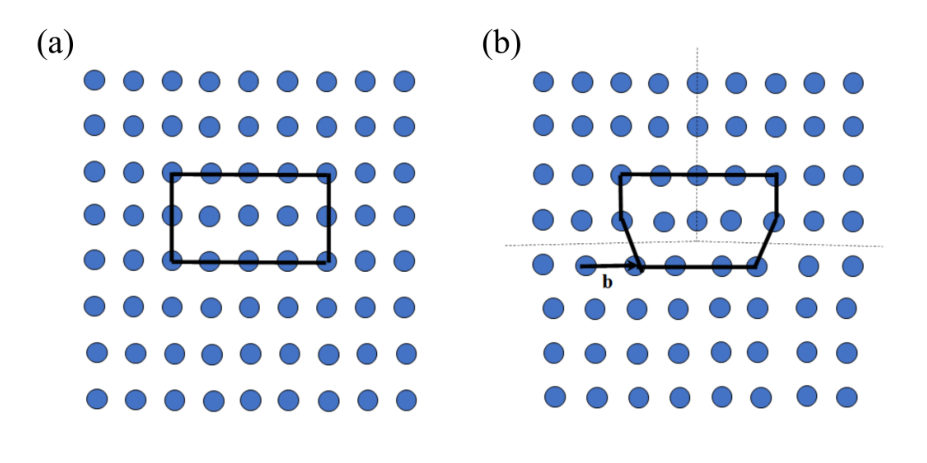
<figcaption class="paper-figure-caption"><b>Fig 1.</b> Figure 1: Dislocation in crystal and Burgers circuit. (a) Perfect crystal lattice containing no dislocations. A Burgers circuit constructed around the lattice closes exactly, yielding a zero Burgers vector. (b) Crystal containing an edge dislocation. The same Burgers circuit exhibits a closure failure due to the lattice distortion, defining the Burgers vector b, which characterizes the magnitude and direction of the defect.</figcaption>
</figure>
<figure class="paper-figure-card">
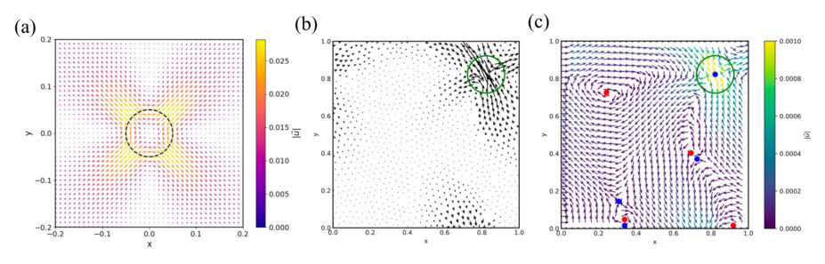
<figcaption class="paper-figure-caption"><b>Fig 2.</b> Figure 2: Topological structure of Eshelby-like plastic rearrangements. (a) Analytical displacement field generated by an isolated Eshelby inclusion centered at the origin. The dashed circle denotes the inclusion boundary, while the color scale represents the displacement magnitude. (b) Displacement field obtained from a representative particle- based simulation. The highlighted region identifies a localized Eshelby-like rearrange- ment embedded within the surrounding elastic medium. (c) Corresponding normalized displacement field on a coarse-grained grid. Positive and negative topological defects, identified through the winding number of the displacement orientation, are shown in red and...</figcaption>
</figure>
<figure class="paper-figure-card">
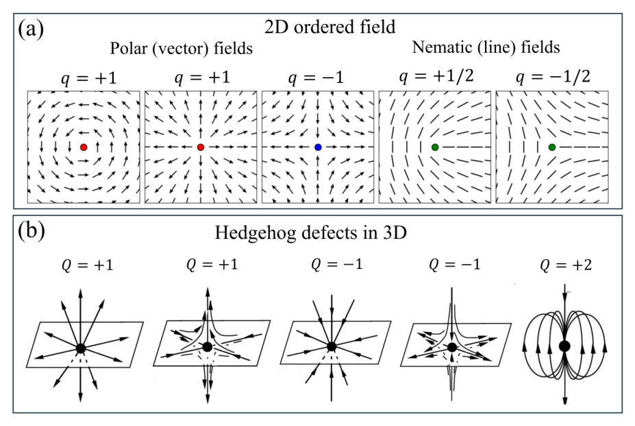
<figcaption class="paper-figure-caption"><b>Fig 3.</b> Figure 3: Representative topological defects in two and three spatial dimensions. (a) Examples of point defects in two-dimensional vector and nematic fields. For polar vector fields, a vortex (q = +1), a source (q = +1), and an anti-vortex (q = −1) are shown, where the red (blue) dot indicates the defect core. For nematic fields, the characteristic comet-shaped +1/2 defect and triangular −1/2 defect are illustrated. These defects are characterized by their winding number q, which measures the total rotation of the local orientation field around the defect core. (b) Schematic examples of three-dimensional point defects (hedgehogs) carrying different topological charges Q. Panel (b) adapted...</figcaption>
</figure>
<figure class="paper-figure-card">
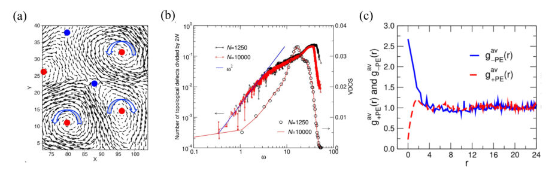
<figcaption class="paper-figure-caption"><b>Fig 4.</b> Figure 4: Topological defects in vibrational eigenmodes of amorphous solids and their con- nection to plastic activity. (a) Representative low-frequency eigenvector field (ω = 1.5) obtained from the Hessian matrix of a two-dimensional glass, illustrating the emergence of vortex- and anti-vortex-like structures in the vibrational mode. (b) Frequency depen- dence of the topological defect density (left axis) together with the vibrational density of states D(ω) (right axis) for two system sizes, highlighting the relation between topologi- cal excitations and low-frequency vibrational modes. (c) Correlation between the spatial locations of topological defects and subsequent plastic...</figcaption>
</figure>
<figure class="paper-figure-card">
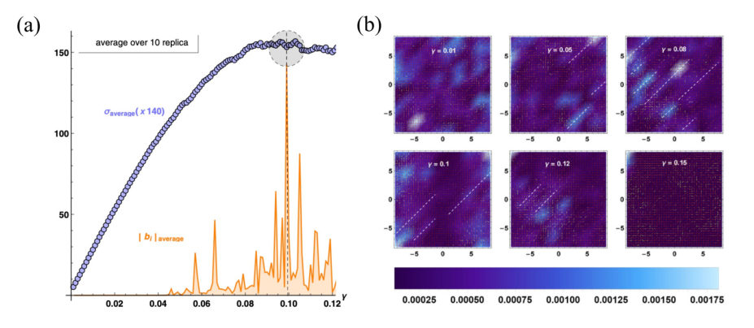
<figcaption class="paper-figure-caption"><b>Fig 5.</b> Figure 5: Evolution of the generalized Burgers vector during deformation and its connec- tion to strain localization. (a) Stress - strain response of a two-dimensional amorphous solid (purple circles) together with the average magnitude of the Burgers vector, |b|. The pronounced increase in |b| near the stress-drop event indicates the accumulation of deformation incompatibility preceding plastic relaxation. (b) Spatial evolution of the dis- placement field under increasing applied strain γ. Arrows represent the local displacement vectors, while the background color denotes the magnitude of the Burgers field. Regions of enhanced Burgers magnitude progressively organize into a localized...</figcaption>
</figure>
</div>

<p><strong>Summary.</strong> This review synthesizes recent work showing that topological defects govern mechanical failure in amorphous solids. By analyzing fields derived from particle displacements and vibrational modes, the authors demonstrate that singularities like vortices correlate precisely with yielding transitions. This suggests topology offers a powerful, universal descriptor for plasticity beyond traditional structural models.</p>
<p><strong>Why it may be interesting.</strong> While focused on condensed matter mechanics, the reliance on characterizing system states via global topological invariants (like winding numbers) is mathematically analogous to methods used in quantum field theory or analyzing entanglement structures in many-body systems.</p>
<details>
<summary>Detailed structure</summary>
<p><strong>Main problem.</strong> The review aims to establish a unified topological description for plasticity and mechanical failure in amorphous solids (glasses), extending concepts from crystalline defects.</p>
<p><strong>Main result.</strong> Topological defects, such as vortices and hedgehog defects derived from non-affine displacements or vibrational modes, show strong correlations with soft spots, yielding, and shear-band formation in glasses.</p>
<p><strong>Method.</strong> The study combines theoretical frameworks (e.g., STZ theory, non-affine elasticity) with computational analysis of topological invariants calculated on continuous fields derived from simulations.</p>
<p><strong>Model / system.</strong> The physical system is amorphous solids, including metallic and colloidal glasses, studied across various states like jammed or yielding regimes. The analysis focuses on the structural disorder inherent to these materials.</p>
<p><strong>Key observables.</strong> Topological invariants (winding numbers, hedgehog charges), non-affine displacement fields ($D_{2,	ext{min}}$), low-frequency vibrational modes, and defect density ($   ext{NHTD}$).</p>
<p><strong>Important parameters / regimes.</strong> Shear strain ($\gamma$), critical fraction of non-affine particles ($p_c$), and the frequency spectrum ($\omega$) of vibrations.</p>
<p><strong>Assumptions / limitations.</strong> The primary assumption is that topological structures provide a robust, universal language to describe mechanical failure in disordered systems, analogous to dislocations in crystals.</p>
<p><strong>Figures summary.</strong> Figures illustrate defect visualization (vortices/hedgehog defects) in 2D and 3D fields derived from non-affine displacements and vibrational modes. Key figures correlate the density of these topological defects with the onset of yielding or shear localization.</p>
<p><strong>Paper structure.</strong> The review progresses by contrasting crystalline defect theory with amorphous systems, introducing concepts like non-affine motion and soft spots, and culminating in a systematic analysis showing how topological charges characterize plasticity during mechanical loading.</p>
</details>
<details>
<summary>Abstract</summary>
<p>Topological defects play a central role in the mechanical behavior of crystalline materials, yet their relevance to amorphous solids has only recently begun to emerge. Over the last few years, theoretical, computational, and experimental studies have revealed the presence of well-defined topological invariants in vibrational eigenmodes, non-affine displacement fields, and deformation-induced vector fields of glasses. These defects have been shown to correlate strongly with soft spots, localized plastic rearrangements, yielding, and shear-band formation, suggesting a new perspective on the microscopic origins of plasticity in disordered materials. In this review, we provide a comprehensive overview of recent developments in the rapidly growing field of topological defects in glasses. We discuss the underlying theoretical concepts, including Burgers vectors, non-affine plasticity, vibrational modes, and topological invariants, and review recent numerical and experimental advances. Finally, we assess the current achievements, limitations, and open questions, and discuss future directions toward a unified topological description of plasticity and mechanical failure in amorphous solids.</p>
</details>
<p><sub><a href="#top">↑ back to top</a></sub></p>

<p><a id="paper-2606.24247"></a></p>
<h3 id="doppler-enhanced-superheterodyne-rydberg-microwave-receiver"><a href="http://arxiv.org/abs/2606.24247v1">Doppler-enhanced superheterodyne Rydberg microwave receiver</a></h3>
<p><strong>Authors:</strong> Yuwen Yin, Ruimin Chen, Shibing Ji, Jinlian Hu, Shaofeng Wang, Yunhui He, Jingxu Bai, Xiao-Qiang Shao, Yuechun Jiao, Jianming Zhao<br>
<strong>Type:</strong> experiment · <strong>Category:</strong> other · <strong>PDF:</strong> <a href="https://arxiv.org/pdf/2606.24247v1">https://arxiv.org/pdf/2606.24247v1</a><br>
<strong>Analysis basis:</strong> full PDF text, analyzed in chunks
<strong>Topic relevance:</strong> <code>quantum measurements</code> <strong>2/5</strong> · <code>quantum optics experiment</code> <strong>2/5</strong> · <code>Rydberg arrays</code> <strong>1/5</strong> · <code>analog quantum simulation</code> <strong>1/5</strong> · <code>driven-dissipative phase transition</code> <strong>1/5</strong> · <code>interference shaping light</code> <strong>1/5</strong></p>
<div class="figure-strip-hint">↔ Scroll figures horizontally</div>
<div class="paper-figures-scroll">
<figure class="paper-figure-card">
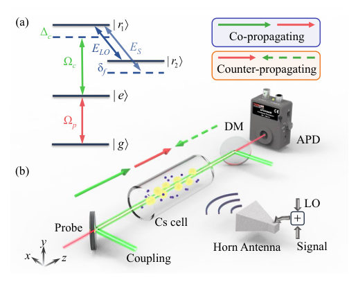
<figcaption class="paper-figure-caption"><b>Fig 1.</b> FIG. 1. (a) Energy-level diagram of Rydberg EIT-AT. (b) Sketch of the experimental setup. An 852 nm probe laser (Rabi frequency Ωp) and a 509 nm coupling laser (Ωc) drive the ground atoms |g⟩ to the Rydberg state |r1⟩via an intermediate state |e⟩. A LO field ELO drives the resonant transition of |r1⟩→|r2⟩, while the signal field ES has a frequency difference δ f with the LO field. The cou- pling laser co-propagates (solid green arrow) or counter-propagates (dashed green arrow) with the probe laser. The transmission of the probe laser is detected by an avalanche photodiode (APD) after a dichroic mirror (DM). The LO field and the signal field are transmit- ted to the vapor cell by a horn...</figcaption>
</figure>
<figure class="paper-figure-card">
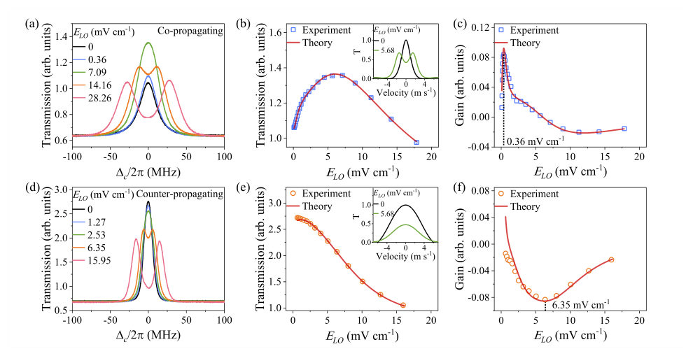
<figcaption class="paper-figure-caption"><b>Fig 2.</b> FIG. 2. (a) Experimental scanned Rydberg EIT spectra at indicated strengths of ELO fields in co-propagation configuration. (b) and (c) The dependence of the EIT amplitude and its derivative on the MW field strength at ∆c = 0. The inset in (b) demonstrates the transmission rate (T) of the different velocity classes of atoms at ELO = 0 and 5.68 mV cm−1. (d-f) Scanned Rydberg EIT spectra, EIT amplitude, and its derivative as a function of the MW field strength, similar to (a-c), except for the counter-propagating configuration. The vertical dashed lines mark the maximum gain point. The solid lines in (b) and (e) show our calculations with parameters Ωp = 2π × 6.62 (9.89) MHz, Ωc = 2π ×5.69...</figcaption>
</figure>
<figure class="paper-figure-card">
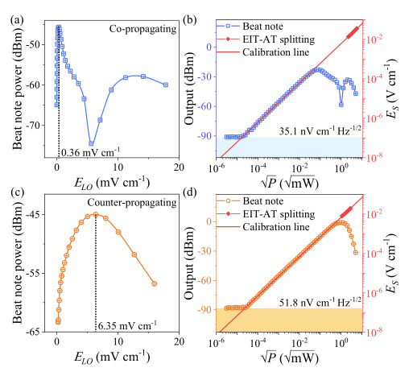
<figcaption class="paper-figure-caption"><b>Fig 3.</b> FIG. 3. (a) and (c) The response of the system to the LO field with fixed signal field using superheterodyne measurement for the co-propagating and counter-propagating configurations, respectively. The vertical dashed lines mark the maximum output point. (b) and (d) Measured sensitivity for the co-propagating (blue squares) and counter-propagating (yellow circles) configurations, respectively. The red diamonds show the EIT-AT splittings in a strong field re- gion, and the red solid line shows the calibrated electric field. The blue and yellow shadow regions represent the noise level of the spec- trum analyzer.</figcaption>
</figure>
</div>

<p><strong>Summary.</strong> The authors demonstrate a highly sensitive Rydberg microwave receiver by exploiting the Doppler effect using a co-propagating laser configuration. This setup significantly outperforms the standard counter-propagating geometry, achieving better sensitivity and requiring much lower local oscillator power. The work highlights the tunability of quantum sensing platforms through careful control of light propagation geometry.</p>
<p><strong>Why it may be interesting.</strong> This work provides a concrete, high-sensitivity platform for microwave detection based on quantum interference effects in Rydberg atoms. The comparison between co- and counter-propagating schemes offers valuable insight into how geometric laser alignment can be engineered to optimize fundamental physical measurements.</p>
<details>
<summary>Detailed structure</summary>
<p><strong>Main problem.</strong> The paper reports on enhancing the sensitivity of a Rydberg microwave (MW) receiver by strategically exploiting the Doppler effect in an atomic vapor cell.</p>
<p><strong>Main result.</strong> By using a co-propagating laser configuration, they achieved a significantly enhanced sensitivity ($35.1 	ext{ nV cm}^{-1} 	ext{ Hz}^{-1/2}$) compared to counter-propagating setups, while also reducing the required local oscillator field by a factor of 17.6.</p>
<p><strong>Method.</strong> The enhancement is realized by implementing a two-photon Rydberg ladder scheme and utilizing the superheterodyne technique to measure the system's response to applied MW fields.</p>
<p><strong>Model / system.</strong> The physical system involves alkali-atom-based Rydberg atoms in a vapor cell, modeled using a four-level ladder system. The analysis compares co-propagating versus counter-propagating laser geometries to exploit Doppler shifts.</p>
<p><strong>Key observables.</strong> EIT transmission amplitude and the derivative (MW-optical gain) of the transmission spectrum as a function of the local oscillator field strength ($E_{LO}$).</p>
<p><strong>Important parameters / regimes.</strong> Sensitivity values ($   ext{nV cm}^{-1}     ext{ Hz}^{-1/2}$), enhancement factors (1.5 times better sensitivity, 17.6 factor reduction in LO field).</p>
<p><strong>Assumptions / limitations.</strong> The analysis relies on the rotating-wave approximation applied to the four-level ladder system.</p>
<p><strong>Figures summary.</strong> Figures demonstrate EIT spectra, amplitude dependence on $E_{LO}$, and MW-optical gain for both co- and counter-propagating setups, confirming superior performance in the co-propagating case.</p>
<p><strong>Paper structure.</strong> The paper first introduces the physical setup and mechanism (Doppler enhancement via co-propagation). It then presents theoretical modeling using master equations and experimental measurements comparing the two propagation geometries to quantify the performance gains.</p>
</details>
<details>
<summary>Abstract</summary>
<p>We report the enhanced sensitivity of the Rydberg microwave (MW) receiver by exploiting the Doppler effect in a vapor cell. A two-photon Rydberg ladder scheme is implemented via the co-propagation of probe and coupling lasers, which enhances the Doppler effect. When an MW field is applied, microwave dressing modifies the velocity-dependent resonance condition, enabling stronger contributions from atoms with non-zero velocities and leading to an enhancement of the EIT transmission. Based on this mechanism, we achieve a sensitivity of $35.1\ \mathrm{nV\ cm^{-1}\ Hz^{-1/2}}$ using the heterodyne technique, which is 1.5 times better than that obtained in the counter-propagating configuration. Meanwhile, the required local oscillator (LO) field is reduced by a factor of 17.6 compared with the counter-propagating configuration, which is advantageous for applications requiring minimal radiation and low power consumption. Moreover, the co-propagating configuration is more amenable to integration or portable sensing platforms because multiple laser fields can be delivered through a single optical fiber.</p>
</details>
<p><sub><a href="#top">↑ back to top</a></sub></p>

<p><a id="paper-2606.23951"></a></p>
<h3 id="mlmer-srensen-gates-in-trapped-ions-chains-in-the-presence-of-correlated-noise"><a href="http://arxiv.org/abs/2606.23951v1">Mølmer-Sørensen gates in trapped-ions chains in the presence of correlated noise</a></h3>
<p><strong>Authors:</strong> D. V. Donchenko, E. A. Anikin, O. Lakhmanskaya, K. Lakhmanskiy<br>
<strong>Type:</strong> theory · <strong>Category:</strong> other · <strong>PDF:</strong> <a href="https://arxiv.org/pdf/2606.23951v1">https://arxiv.org/pdf/2606.23951v1</a><br>
<strong>Analysis basis:</strong> full PDF text, analyzed in chunks
<strong>Topic relevance:</strong> <code>QC/QI experiment</code> <strong>2/5</strong> · <code>Keldysh / 2PI / non-Gaussian methods</code> <strong>1/5</strong> · <code>analog quantum simulation</code> <strong>1/5</strong> · <code>correlated / nonlocal dissipation</code> <strong>1/5</strong> · <code>methods for driven-dissipative</code> <strong>1/5</strong> · <code>non-equilibrium dynamics</code> <strong>1/5</strong></p>
<div class="figure-strip-hint">↔ Scroll figures horizontally</div>
<div class="paper-figures-scroll">
<figure class="paper-figure-card">
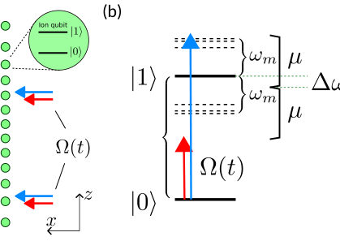
<figcaption class="paper-figure-caption"><b>Fig 1.</b> Figure 1. (a) The ion chain in the Paul trap. The ions 𝑖1, 𝑖2 are illuminated by bichromatic beams per- pendicular to the ion chain. (b) The bichromatic beam detunings ±𝜇are set close to the blue and red motional sidebands ±𝜔𝑚of the chain. The laser frequency fluc- tuation shifts the frequencies of both components by Δ𝜔.</figcaption>
</figure>
<figure class="paper-figure-card">
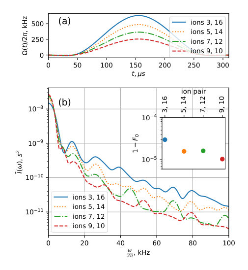
<figcaption class="paper-figure-caption"><b>Fig 2.</b> Figure 2. (a) The pulse shapes Ω(𝑡) for the imple- mentation of the MS gate between different ions in a chain of 20 40Ca+ ions. The trap axial and ra- dial frequencies are set to 𝜔𝑧= (2𝜋) 147.2 kHz and 𝜔𝑥= (2𝜋) 2.7 MHz, and the bichromatic detuning is 𝜇= 𝜔𝑥+ 𝛿, 𝛿= (2𝜋) 8.06 kHz. (b) The MS gate sensi- tivity functions ˜𝐼(𝜔) for the pulse shapes shown in (a). The inset: the contribution of imperfectly closed phase trajectories into error.</figcaption>
</figure>
<figure class="paper-figure-card">
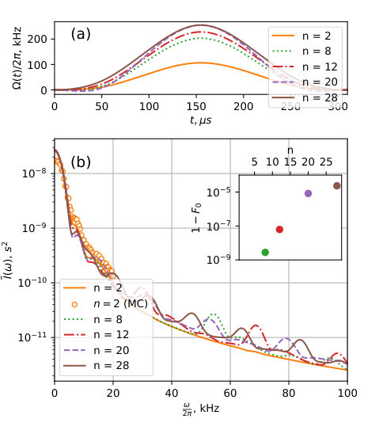
<figcaption class="paper-figure-caption"><b>Fig 3.</b> Figure 3. (a) The pulse shapes Ω(𝑡) implementing MS gate between two central ions in 40Ca+ ion chains of different lengths. The trap radial frequency and the bichromatic detuning are the same as for Fig. 2, and the axial frequency is chosen differently for each 𝑛to keep the smallest radial frequency equal to (2𝜋)2.4MHz. (b) The MS gate sensitivity functions ˜𝐼(𝜔) for the pulse shapes shown in (a). The circles show the results of the Monte-Carlo simulations for two ions. The inset: the contribution of imperfectly closed phase trajecto- ries into error.</figcaption>
</figure>
<figure class="paper-figure-card">
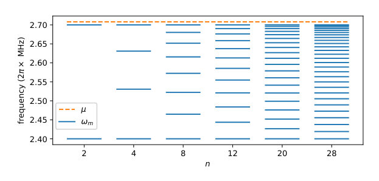
<figcaption class="paper-figure-caption"><b>Fig 4.</b> Figure 4. Blue solid lines show the radial phonon mode frequencies of the 𝑛-ion chain in the harmonic potential with the radial secular frequency 2.7MHz. Orange dashed line shows the value of the bichromatic detuning 𝜇 chosen for MS gate implementation.</figcaption>
</figure>
</div>

<p><strong>Summary.</strong> The paper theoretically investigates the impact of correlated laser frequency noise on Mølmer-Sørensen gates used in trapped-ion quantum computing. By employing perturbation theory, the authors quantify gate infidelity based on the noise's power spectral density. They reveal that the sensitivity to noise is highly dependent on the physical separation between the qubits, offering critical guidelines for improving hardware robustness.</p>
<p><strong>Why it may be interesting.</strong> This work provides quantitative predictions on how environmental noise couples to quantum gates in solid-state or trapped-ion architectures, which is crucial for designing fault-tolerant quantum hardware.</p>
<details>
<summary>Detailed structure</summary>
<p><strong>Main problem.</strong> The study analyzes how correlated laser frequency noise affects the fidelity of Mølmer-Sørensen (MS) gates implemented on trapped-ion chains.</p>
<p><strong>Main result.</strong> The gate sensitivity to noise depends strongly on ion separation; medium-frequency noise significantly impacts distant ions more than neighboring ones, while low-frequency noise has a position-independent effect.</p>
<p><strong>Method.</strong> Perturbation theory is employed to calculate the gate infidelity by integrating over the noise power spectral density using a derived sensitivity function $\tilde{I}(\omega)$.</p>
<p><strong>Model / system.</strong> The system involves qubit registers formed by trapped ions, where gates are executed via bichromatic laser pulses coupling to collective phonon modes. The Hamiltonian includes terms for ideal gate evolution and correlated noise.</p>
<p><strong>Key observables.</strong> Gate fidelity ($F$), sensitivity function $\tilde{I}(\omega)$, and the resulting gate infidelity $1-F$.</p>
<p><strong>Important parameters / regimes.</strong> Noise power spectral density $S(\omega)$, ion positions within the chain, and the frequency regime of the noise (low vs. medium).</p>
<p><strong>Assumptions / limitations.</strong> The analysis uses perturbation theory for the noise term and assumes that certain radial phonon modes can be neglected if their frequencies differ significantly from the primary axial mode.</p>
<p><strong>Figures summary.</strong> Figures illustrate pulse shapes $\Omega(t)$ and the calculated MS gate sensitivity functions $\tilde{I}(\omega)$ for various ion pairs and chain lengths (e.g., 20-ion chains).</p>
<p><strong>Paper structure.</strong> The paper builds from defining the physical system and Hamiltonian, deriving the general expression for infidelity using perturbation theory, calculating the necessary phonon mode traces, and finally analyzing $\tilde{I}(\omega)$ for different noise regimes and ion separations.</p>
</details>
<details>
<summary>Abstract</summary>
<p>We analyze the impact of correlated laser frequency noise on Mølmer-Sørensen gates in qubit registers based on trapped-ion chains. Using perturbation theory, we calculate gate fidelities in the presence of noise with arbitrary power spectral density for different chain lengths and ion positions in the chain. With our approach, we account for simultaneous excitation of multiple phonon modes during gate operation. We find out that the impact of medium-frequency laser noise depends considerably on the positions of the ions in the chain. In contrast, low-frequency noise has similar effect for different chain lengths and ion positions.</p>
</details>
<p><sub><a href="#top">↑ back to top</a></sub></p>

<p><a id="paper-2606.23908"></a></p>
<h3 id="analysis-of-the-frequency-shift-in-coherent-population-trapping-resonances-dynamic-continuous-wave-spectroscopy-at-the-phase-jump-modulation-and-its-comparison-with-the-conventional-approach"><a href="http://arxiv.org/abs/2606.23908v1">Analysis of the frequency shift in coherent population trapping resonance's dynamic continuous-wave spectroscopy at the phase-jump modulation and its comparison with the conventional approach</a></h3>
<p><strong>Authors:</strong> E. D. Chivilis, E. A. Tsygankov<br>
<strong>Type:</strong> theory · <strong>Category:</strong> other · <strong>PDF:</strong> <a href="https://arxiv.org/pdf/2606.23908v1">https://arxiv.org/pdf/2606.23908v1</a><br>
<strong>Analysis basis:</strong> full PDF text, analyzed in chunks
<strong>Topic relevance:</strong> <code>quantum measurements</code> <strong>2/5</strong> · <code>Keldysh / 2PI / non-Gaussian methods</code> <strong>1/5</strong> · <code>driven-dissipative phase transition</code> <strong>1/5</strong> · <code>interference shaping light</code> <strong>1/5</strong> · <code>methods for driven-dissipative</code> <strong>1/5</strong></p>
<div class="figure-strip-hint">↔ Scroll figures horizontally</div>
<div class="paper-figures-scroll">
<figure class="paper-figure-card">
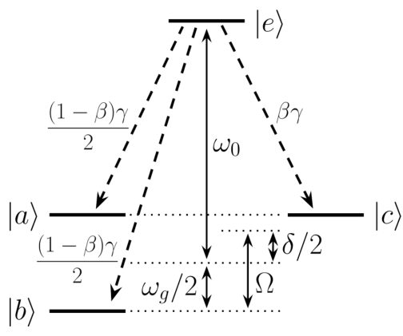
<figcaption class="paper-figure-caption"><b>Fig 1.</b> FIG. 1. System of levels under consideration. Natural width of the excited state is γ. The spontaneous decay populates ground-state levels |a⟩, |b⟩, and |c⟩with rates (1 −β)γ/2, (1 −β)γ/2, and βγ, respectively.</figcaption>
</figure>
<figure class="paper-figure-card">

<figcaption class="paper-figure-caption"><b>Fig 2.</b> FIG. 2. Frequency shift of the error-signal zero for different integration times plotted via (10). Units on the horizontal axis are the ratio of the power broadening to the relaxation rate of the ground-state coherence. The vertical axis is given in units  (V 2 −1 −V 2 1 )/Γ  ∆L/Γ. The ratio of the coherence decay rate to that of ground-state populations to their equi- librium values 1/3 is Γc/Γg = 3.</figcaption>
</figure>
<figure class="paper-figure-card">

<figcaption class="paper-figure-caption"><b>Fig 3.</b> FIG. 3. Dynamics of the ground-state density-matrix ele- ments after forward and backward phase jumps. The val- ues of parameters are β = 0.2, δ/˜Γc = 0.21, Γc/Γg = 3.0, ∆L/Γ = 0.1, (V 2 −1 + V 2 1 )/(ΓΓc) = 1.0, V 2 1 /V 2 −1 = 0.9. The period of modulation is long enough to ensure the steady- state regime before the following jump.</figcaption>
</figure>
<figure class="paper-figure-card">

<figcaption class="paper-figure-caption"><b>Fig 4.</b> FIG. 4. The frequency shift of the central dispersive curve’s zero. The solid line is plotted via formula (12), the circles are numerical calculations for β = 0.5. The values of other parameters are the same as in Fig. 3. The shape of the curve coincides with that for the phase-jump technique at integra- tion time of 1/1000˜Γc.</figcaption>
</figure>
<figure class="paper-figure-card">

<figcaption class="paper-figure-caption"><b>Fig 5.</b> FIG. 5. Dependence of the normalized slope on β for the phase-jump technique (circles) and the conventional approach (triangles). The values of parameters are ˜V−1 + ˜V1 = Γc, ˜V−1 = ˜V1, ∆L = 0, Γg = Γc/3. The integration time for phase jumps is 1/1000˜Γc. For harmonic modulation, ωm = 100˜Γc, m = 0.54.</figcaption>
</figure>
</div>

<p><strong>Summary.</strong> This paper theoretically compares the frequency shift measured in CPT resonance using phase-jump modulation versus conventional harmonic modulation. The authors derive and analyze the error signal shift for both methods under a $\Lambda$-system model. They conclude that while mathematically similar at short times, the conventional method is preferred experimentally due to its superior noise performance at higher frequencies.</p>
<p><strong>Why it may be interesting.</strong> This work provides a rigorous theoretical comparison between two advanced spectroscopic techniques used to measure fundamental properties (like light shifts) in atomic systems, which is highly relevant for experimental quantum optics research.</p>
<details>
<summary>Detailed structure</summary>
<p><strong>Main problem.</strong> The study compares the frequency shift observed in coherent population trapping (CPT) resonance spectroscopy when using phase-jump modulation versus conventional harmonic sinusoidal modulation.</p>
<p><strong>Main result.</strong> While both techniques yield similar results at short integration times, the authors conclude that the conventional approach is more suitable for light shift suppression due to its ability to operate at higher frequencies and better noise characteristics.</p>
<p><strong>Method.</strong> The analysis involves solving the quantum Liouville equation under various approximations (e.g., low saturation) and deriving expressions for the error signal shift ($\delta_{as}$ or $\delta_Q$) for both modulation schemes.</p>
<p><strong>Model / system.</strong> The system is a three-level Lambda ($\Lambda$) configuration driven by a bichromatic optical field, modeled using a Hamiltonian and governed by the quantum Liouville equation. The analysis focuses on ground-state density matrix elements.</p>
<p><strong>Key observables.</strong> Frequency shift of the error signal ($\delta_{as}$ or $\delta_Q$), which is derived from the difference in absorption measurements.</p>
<p><strong>Important parameters / regimes.</strong> Integration time ($ au$), modulation parameters ($m, \omega_m$), and relaxation rates ($\Gamma_c, \Gamma_g$).</p>
<p><strong>Assumptions / limitations.</strong> The analysis assumes unisotropic relaxation for ground-state elements and neglects Doppler broadening compared to the homogeneous width.</p>
<p><strong>Figures summary.</strong> Figures compare the frequency shift ($\delta_{tot}(	au)$) vs. integration time $   au$, showing agreement between techniques at short times, and plot the dependence of the normalized slope on the parameter $eta$.</p>
<p><strong>Paper structure.</strong> The paper develops the theory for both phase-jump spectroscopy and conventional harmonic modulation separately before performing a detailed comparison of the resulting frequency shift formulas and numerical results across varying parameters.</p>
</details>
<details>
<summary>Abstract</summary>
<p>We present the research of dynamic continuous-wave spectroscopy of the coherent population trapping resonance at the phase-jump modulation. Λ system of levels supplemented by a nonabsorbing state and bichromatic optical field, whose spectral components have different intensities, are considered. We demonstrate that the asymmetry leads to an additional nonlinear shift of the error-signal frequency under unisotropic relaxation of the ground-state density-matrix elements. We also investigate the conventional approach where the frequency difference of the optical field components is harmonically modulated to obtain the error signal. Comparison demonstrates that in the high-frequency modulation regime the corresponding frequency shift is more linear than at the phase-jump modulation for nonshort integration times.</p>
</details>
<p><sub><a href="#top">↑ back to top</a></sub></p>

<p><a id="paper-2606.24568"></a></p>
<h3 id="optical-spectroscopy-of-bose-einstein-condensates-at-finite-temperature"><a href="http://arxiv.org/abs/2606.24568v1">Optical spectroscopy of Bose-Einstein condensates at finite temperature</a></h3>
<p><strong>Authors:</strong> R. M. F. Andersen, L. N. Stokholm, I. Zebergs, N. R. Neubert, A. S. Chatterley, N. Kjærgaard, J. J. Arlt<br>
<strong>Type:</strong> experiment · <strong>Category:</strong> quantum gases · <strong>PDF:</strong> <a href="https://arxiv.org/pdf/2606.24568v1">https://arxiv.org/pdf/2606.24568v1</a><br>
<strong>Analysis basis:</strong> full PDF text, analyzed in chunks
<strong>Topic relevance:</strong> <code>quantum measurements</code> <strong>2/5</strong> · <code>quantum optics experiment</code> <strong>2/5</strong> · <code>analog quantum simulation</code> <strong>1/5</strong> · <code>interference shaping light</code> <strong>1/5</strong></p>
<div class="figure-strip-hint">↔ Scroll figures horizontally</div>
<div class="paper-figures-scroll">
<figure class="paper-figure-card">

<figcaption class="paper-figure-caption"><b>Fig 1.</b> FIG. 1: Schematic of the detection setup. Collimated probe light (orange) is sent through a cloud of trapped atoms, and some of the light is scattered (blue). At the focus plane of the probe beam, an optional small dark-field obstacle can be placed to block only the unscattered light. Additional filtering is achieved by a pinhole at an intermediate image plane. The image is either relayed onto a camera or focused onto a single-photon detector (SPD).</figcaption>
</figure>
<figure class="paper-figure-card">

<figcaption class="paper-figure-caption"><b>Fig 2.</b> FIG. 2: Simulated BF (left) and DF (right) spectra of a partially condensed cloud at a temperature of 130 nK containing 1.70 · 105</figcaption>
</figure>
<figure class="paper-figure-card">

<figcaption class="paper-figure-caption"><b>Fig 3.</b> FIG. 3: Measurement sequence of spectra and the following absorption images after TOF. (a) Illustrative traces of the probe power ( ), cODT power ( ), and probe frequency ( ). (b) Typical count rate observed on the SPD in BF configuration. (c) Count rate on SPD observed in DF configuration. (d) Time intervals in the experimental sequence. The three intervals labelled A, B, and C, are used to calculate T BF/DF (see text).</figcaption>
</figure>
<figure class="paper-figure-card">

<figcaption class="paper-figure-caption"><b>Fig 4.</b> FIG. 4: Calibration of the spectral model. Solid black line: Spectrum of a partially condensed cloud at T = 125 nK, with Nth = 1.3 · 105, and N0 = 4.9 · 105 obtained from absorption imaging. Dashed blue line: Model spectrum assuming infinite aperture radius and α = 1. Solid blue line: Model spectrum with the calibrated values for NA and α.</figcaption>
</figure>
<figure class="paper-figure-card">

<figcaption class="paper-figure-caption"><b>Fig 5.</b> Figure 5 shows examples of two DF and two BF mea- surements: a cold, bimodal cloud and a warm, purely thermal cloud. The figure shows the normalized trans- mission spectra according to Eq. (10) and Eq. (9) for DF and BF, respectively.</figcaption>
</figure>
</div>

<p><strong>Summary.</strong> The research reports on using optical spectroscopy to characterize ultracold Bose-Einstein condensates of $^{87}	ext{Rb}$ atoms. By measuring spectral features in both dark-field and bright-field configurations, the authors developed a model to extract temperature and atom numbers directly within the trap. The findings establish that dark-field spectroscopy is a highly sensitive and superior tool for characterizing these quantum gases at very low temperatures.</p>
<p><strong>Why it may be interesting.</strong> This work provides an advanced, non-destructive, in-situ diagnostic tool for characterizing quantum gas mixtures at extremely low temperatures, offering quantitative metrics (T, $N_{th}$, $N_0$) that complement traditional time-of-flight methods.</p>
<details>
<summary>Detailed structure</summary>
<p><strong>Main problem.</strong> The study aims to characterize ultracold, partially condensed atomic gases by measuring distinct spectral features arising from both thermal and Bose-Einstein condensed components.</p>
<p><strong>Main result.</strong> Dark-field optical spectroscopy proves to be a superior technique compared to bright-field measurements for characterizing these systems, showing good agreement with Time-of-Flight imaging for temperature and atom numbers.</p>
<p><strong>Method.</strong> The experiment uses an in-situ dark-field configuration with single-photon detection and a frequency-agile laser system to measure spectral profiles as a function of probe detuning.</p>
<p><strong>Model / system.</strong> The physical system is a cloud of $^{87}	ext{Rb}$ atoms trapped in a crossed optical dipole trap. The analysis relies on developing a model for light propagation through this inhomogeneous atomic cloud, incorporating density components ($
ho = 
ho_0 + 
ho_{th}$).</p>
<p><strong>Key observables.</strong> Spectral features (intensity profiles) measured as a function of probe frequency detuning ($\delta$); extracted parameters include temperature ($T$), thermal atom number ($N_{th}$), and condensed atom number ($N_0$).</p>
<p><strong>Important parameters / regimes.</strong> Low temperatures (nK range); the ratio between thermal and condensed fractions; spectral detuning ($\delta$).</p>
<p><strong>Assumptions / limitations.</strong> The analysis assumes a thin-lens approximation for light propagation, which is noted as a potential source of systematic deviation in cold spectra.</p>
<p><strong>Figures summary.</strong> Figures illustrate the experimental setup (schematics), simulated BF and DF spectra for partially condensed clouds, and comparisons between spectroscopically derived parameters and those from TOF absorption imaging.</p>
<p><strong>Paper structure.</strong> The paper progresses by first detailing the measurement setup and spectral diagnostics in both dark-field and bright-field configurations. It then develops the theoretical model for light propagation through the inhomogeneous cloud, followed by a detailed comparison of results against conventional Time-of-Flight measurements to validate the spectroscopic technique.</p>
</details>
<details>
<summary>Abstract</summary>
<p>We report on optical spectroscopic measurements of ultracold and partially condensed 87Rb gases, which show distinct spectral features due to the thermal and the Bose condensed components in the frequency domain. These features are detected in-situ by using a dark-field configuration with single-photon sensitivity and a frequency-agile laser system. To interpret the observed spectra, we develop a model for light propagation through an inhomogeneous atomic cloud. This model enables the extraction of temperature and atom number, which we benchmark against conventional time-of-flight absorption imaging. The spectroscopically obtained cloud parameters show enhanced sensitivity to small thermal fractions in nearly pure condensates. We further compare the spectroscopy in dark-field and bright-field configurations, demonstrating the superior performance of the former. Our results reveal previously unexplored spectral structure in optically dense ultracold gases and establish spectroscopy as a tool for characterizing ultracold systems at very low temperatures.</p>
</details>
<p><sub><a href="#top">↑ back to top</a></sub></p>

<p><a id="paper-2606.24150"></a></p>
<h3 id="gate-controlled-spin-qubits-in-confined-altermagnets"><a href="http://arxiv.org/abs/2606.24150v1">Gate-Controlled Spin Qubits in Confined Altermagnets</a></h3>
<p><strong>Authors:</strong> Hamed Vakili<br>
<strong>Type:</strong> theory · <strong>Category:</strong> quantum information and computing · <strong>PDF:</strong> <a href="https://arxiv.org/pdf/2606.24150v1">https://arxiv.org/pdf/2606.24150v1</a><br>
<strong>Analysis basis:</strong> full PDF text, analyzed in chunks
<strong>Topic relevance:</strong> <code>analog quantum simulation</code> <strong>2/5</strong> · <code>entanglement &amp; information structure</code> <strong>1/5</strong> · <code>exotic spin models in light-matter</code> <strong>1/5</strong> · <code>spintronics-quantum-optics interface</code> <strong>1/5</strong></p>
<div class="figure-strip-hint">↔ Scroll figures horizontally</div>
<div class="paper-figures-scroll">
<figure class="paper-figure-card">

<figcaption class="paper-figure-caption"><b>Fig 1.</b> Figure 1. Schematic device geometry. A two-dimensional d- wave altermagnetic layer is confined by electrostatic gates. For the single-qubit device, differential RF voltages modu- late the quadrupolar confinement anisotropy around a fixed elliptical bias point. For the two-qubit device, two locally anisotropic gates define left and right dots, while a central barrier gate sets the static interdot coupling and supplies res- onant barrier modulation.</figcaption>
</figure>
<figure class="paper-figure-card">

<figcaption class="paper-figure-caption"><b>Fig 2.</b> Figure 2. (a) Qubit splitting E1 −E0 and ground-state po- larization ⟨σz⟩0 versus ellipticity δ at Bx = 0.3 T. (b) Length dependence at δ = 0.3, showing E1 −E0, E2 −E0, and ⟨σz⟩0; the energy axis is logarithmic. (c) Spin polarizations of the two lowest states as a function of δ. (d) Color map of E1 −E0 versus δ and Bx; the white contour indicates the op- erating boundary where the two lowest states have opposite spin polarization and both satisfy min(|⟨σz⟩0|, |⟨σz⟩1|) ≥0.6. Parameters: a = 0.5 nm, L = 20 nm except in panel (b), J = 10 meV, ∆ab = 8 meV, Bx = 0.3 T in panels (a)–(c), no SOC, and Bx ∈[0, 0.35 T] in panel (d). Panels (a), (c), and (d) use fixed root-mean-square confinement...</figcaption>
</figure>
<figure class="paper-figure-card">

<figcaption class="paper-figure-caption"><b>Fig 3.</b> Figure 3. Single-qubit operation by a phase-controlled res- onant quadrupolar drive. (a) Xπ/2 pulse from |0⟩, showing P0, P1, Pleak, and the rotating-frame relative phase ϕrot = arg(c1/c0) + ωqt; the dotted line marks −π/2. (b) Xπ pulse producing a |0⟩→|1⟩transition. (c) Spin weights P↑and P↓during the Xπ pulse. (d) Sublattice weights PA and PB during the Xπ pulse. Parameters: a = 0.5 nm, L = 20 nm, J = 12 meV, ∆ab = 8 meV, Bx = 0.3 T, no SOC, fixed ℏωx = 2 meV and ℏωy = 5 meV, E1 −E0 = 34 µeV, and fq = 8.3 GHz. Atomistic hoppings are t1 = −600 meV, t2 = 0, tAM = 40 meV, and µ = 0. AQ = 5.8 × 10−5 eV nm−2, giving |⟨1|AQQ|0⟩| ≃2 µeV. The Xπ/2 and Xπ pulses last four and eight carrier cycles,...</figcaption>
</figure>
<figure class="paper-figure-card">

<figcaption class="paper-figure-caption"><b>Fig 4.</b> Figure 4. Two-electron double-dot calculation using the atom- istic Hamiltonian and a truncated CI basis. (a) Four-state CI manifold versus dot separation d, shown as energy gaps relative to E0 together with the first leakage level E4 −E0. (b) Isolated QD product overlaps |⟨ab|ψj⟩|2 for the four low- est dressed CI eigenstates. (c) Frobenius norm ∥hαβ∥of the 3 × 3 nonlocal Pauli block in Eq. (16) for detunings ϵ = 0, 2, 4, 6 meV. (d) Localized-basis populations and en- tanglement diagnostics during small-signal resonant barrier modulation at d = 18.5 nm; 5Llog is plotted, and the dashed vertical line marks the maximum Bell fidelity. Parameters: a = 0.5 nm, L = 60 nm, d ∈[16 nm, 24 nm] in...</figcaption>
</figure>
</div>

<p><strong>Summary.</strong> The authors propose using spin qubits confined in altermagnetic quantum dots as a novel route to gate control. By exploiting the momentum-dependent spin splitting inherent to altermagnets, they demonstrate high-fidelity single and two-qubit gates purely through electrostatic confinement modulation. This work is significant because it offers a pathway for solid-state quantum computation that circumvents the need for problematic spin-orbit coupling terms.</p>
<p><strong>Why it may be interesting.</strong> This work provides a concrete, solid-state platform for realizing qubits whose fundamental operations (single and two-qubit gates) are governed purely by magnetic structure engineering rather than relying on SOC or external fields in complex ways.</p>
<details>
<summary>Detailed structure</summary>
<p><strong>Main problem.</strong> The paper proposes using gate-defined spin qubits within electrostatically confined altermagnetic quantum dots to achieve local, controlled qubit operations without relying on spin-orbit coupling.</p>
<p><strong>Main result.</strong> They demonstrate that anisotropic altermagnets allow for arbitrary single-qubit rotations and coherent two-qubit entanglement generation by modulating the confinement anisotropy or interdot barrier, respectively.</p>
<p><strong>Method.</strong> The study employs atomistic real-space tight-binding models combined with time-dependent simulations and truncated Configuration Interaction (CI) methods to calculate quantum dynamics.</p>
<p><strong>Model / system.</strong> The system is based on electrons confined in altermagnetic quantum dots (single or double). The Hamiltonian incorporates hopping terms derived from the d-wave altermagnetic structure, confinement potentials ($   ext{HV}$), and time-dependent gate drives.</p>
<p><strong>Key observables.</strong> Single-qubit: Qubit energy gap ($\sim$ microwave range) and spin polarization. Two-qubit: Logical concurrence ($C_{	ext{log}}$) and Bell fidelity ($F_{	ext{Bell}}$).</p>
<p><strong>Important parameters / regimes.</strong> Ellipticity parameter $\delta$, gate drive amplitude ($A_Q$), detuning ($\epsilon$), and central barrier modulation strength.</p>
<p><strong>Assumptions / limitations.</strong> The analysis relies on an idealized elliptical confinement model, and the control mechanism is shown to function without requiring spin-orbit coupling (SOC).</p>
<p><strong>Figures summary.</strong> Figures illustrate schematic setups for single/double dots, show qubit splitting vs. ellipticity ($\delta$), and detail time evolution dynamics showing high fidelity in both single-qubit rotations and two-qubit Bell state preparation.</p>
<p><strong>Paper structure.</strong> The paper first establishes the physical platform using elliptical confinement to create a spin doublet. It then details single-qubit control via resonant quadrupolar driving, followed by an extension to double quantum dots where central-barrier modulation drives the system into maximally entangled two-qubit states.</p>
</details>
<details>
<summary>Abstract</summary>
<p>We propose gate-defined spin qubits in electrostatically confined altermagnetic quantum dots. Elliptical confinement of the $d$-wave altermagnetic structure produces a low-energy doublet with opposite spin polarization. For the range of parameters used here, the qubit states energy gap lies in the microwave range while the leakage gap remains in the meV range. Even without spin-orbit coupling, time-dependent simulations show that a phase-controlled quadrupolar gate drive about a fixed bias point implements $X_{π/2}$ and $X_π$ rotations by resonantly modulating the confinement anisotropy. We extend the study to two-qubits using a double quantum dot. We show that the double quantum dot spectrum can be cleanly projected onto isolated quantum dot product states with a nonzero nonlocal Pauli block in the effective logical two-qubit Hamiltonian. Resonant central-barrier modulation then drives the logical two-qubit component close to a maximally entangled state. These calculations show anisotropic altermagnetic quantum dots as a route to locally gate-controlled spin qubits without requiring spin-orbit coupling.</p>
</details>
<p><sub><a href="#top">↑ back to top</a></sub></p>

<p><a id="paper-2606.23796"></a></p>
<h3 id="a-no-go-theorem-for-privacy-in-distributed-sensing-using-gaussian-states"><a href="http://arxiv.org/abs/2606.23796v1">A no-go theorem for privacy in distributed sensing using Gaussian states</a></h3>
<p><strong>Authors:</strong> Jason L. Pereira, Damian Markham<br>
<strong>Type:</strong> theory · <strong>Category:</strong> quantum information and computing · <strong>PDF:</strong> <a href="https://arxiv.org/pdf/2606.23796v1">https://arxiv.org/pdf/2606.23796v1</a><br>
<strong>Analysis basis:</strong> full PDF text, analyzed in chunks
<strong>Topic relevance:</strong> <code>entanglement &amp; information structure</code> <strong>2/5</strong> · <code>correlated / nonlocal dissipation</code> <strong>1/5</strong> · <code>quantum measurements</code> <strong>1/5</strong></p>
<div class="figure-strip-hint">↔ Scroll figures horizontally</div>
<div class="paper-figures-scroll">
<figure class="paper-figure-card">

<figcaption class="paper-figure-caption"><b>Fig 1.</b> FIG. 1: The basic setup for a distributed sensing problem. For privacy, we want to choose the parametrised unitaries, ui, so that the encoded state only holds information about a linear function of the parameters, and not their individual values.</figcaption>
</figure>
<figure class="paper-figure-card">

<figcaption class="paper-figure-caption"><b>Fig 2.</b> FIG. 2: An illustration of the necessary condition for privacy stated in Theorem 2. If there exists a pair of unitaries, u and v, that collectively act as the identity, when applied to nodes 1 and 2, then u must act as the identity on all possible conditional states after tracing out node 2 and carrying out a measurement on all nodes except for 1 and 2.</figcaption>
</figure>
<figure class="paper-figure-card">

<figcaption class="paper-figure-caption"><b>Fig 3.</b> FIG. 3: Privacy can be restored in a trivial way by allowing each pair of parties to establish pairwise correlations. This can be achieved if each party holds multiple nodes of a graph state, as illustrated here. If each party measures those of their nodes that are correlated with other nodes, they can use the outcomes to encode their remaining node in such a way that their secret parameter remains private.</figcaption>
</figure>
</div>

<p><strong>Summary.</strong> This paper establishes a no-go theorem proving that perfect privacy cannot be achieved in distributed quantum sensing when Gaussian states are used as resources. The authors develop and analyze a quantitative measure called relative privacy to characterize the maximum achievable information leakage instead of absolute secrecy. This result sets fundamental theoretical bounds for quantum sensing protocols using continuous variables.</p>
<p><strong>Why it may be interesting.</strong> This work provides fundamental theoretical limits on the security of quantum communication protocols in continuous variable settings, which is highly relevant for quantum sensing applications using optical resources.</p>
<details>
<summary>Detailed structure</summary>
<p><strong>Main problem.</strong> The authors investigate whether perfect privacy can be achieved when multiple parties use quantum resource states, specifically Gaussian states, to perform distributed sensing.</p>
<p><strong>Main result.</strong> They prove a no-go theorem showing that perfect privacy is impossible for any distributed sensing protocol utilizing Gaussian states. They instead introduce and analyze a measure of relative privacy.</p>
<p><strong>Method.</strong> The analysis uses necessary conditions derived from the requirement that the encoded state must only reveal information about the global function, not individual local parameters. This involves analyzing conditional states and Quantum Fisher Information (QFI).</p>
<p><strong>Model / system.</strong> The system models distributed sensing among N parties sharing a quantum resource state, focusing specifically on continuous variable Gaussian graph states.</p>
<p><strong>Key observables.</strong> Quantum Fisher Information (QFI) matrix, the relative privacy measure ($R_{xy}$), and the encoded state $|\psi_{	ext{enc}}(\{	heta_i\})
angle$.</p>
<p><strong>Important parameters / regimes.</strong> The number of parties $N$, the structure of the graph state (e.g., fully-connected), and the transmissivity of loss channels.</p>
<p><strong>Assumptions / limitations.</strong> The analysis initially focuses on unitary encoding channels, though extensions to general channel encoding are discussed; perfect privacy is assumed impossible for Gaussian states.</p>
<p><strong>Figures summary.</strong> Figure 1 illustrates the basic distributed sensing setup. Figure 3 shows how pairwise correlations can restore some form of privacy in an example setting.</p>
<p><strong>Paper structure.</strong> The paper progresses from establishing necessary conditions for private encoding (Theorem 2) to showing these fail for Gaussian states, and finally introduces relative privacy ($R_{xy}$) as a quantifiable measure of achievable information leakage.</p>
</details>
<details>
<summary>Abstract</summary>
<p>In the discrete variable setting, entangled resource states allow a set of parties to learn a global function of a set of spatially separated systems, whilst keeping the local parameters of those systems completely private. In the continuous variable setting, distributed sensing has been carried out using Gaussian resource states, but without the same guarantees about privacy. Here, we show that perfect privacy is impossible to achieve for any distributed sensing protocol that uses Gaussian states as a resource. We also introduce a measure of relative privacy, bounding the degree to which any Gaussian distributed sensing protocol can keep local parameters hidden.</p>
</details>
<p><sub><a href="#top">↑ back to top</a></sub></p>

<p><a id="paper-2606.24048"></a></p>
<h3 id="an-analysis-of-speculative-window-decoders-for-quantum-error-correction"><a href="http://arxiv.org/abs/2606.24048v1">An Analysis of Speculative Window Decoders for Quantum Error Correction</a></h3>
<p><strong>Authors:</strong> Jocelyn Li, Margaret Martonosi<br>
<strong>Type:</strong> theory · <strong>Category:</strong> quantum information and computing · <strong>PDF:</strong> <a href="https://arxiv.org/pdf/2606.24048v1">https://arxiv.org/pdf/2606.24048v1</a><br>
<strong>Analysis basis:</strong> full PDF text, analyzed in chunks
<strong>Topic relevance:</strong> <code>QC/QI experiment</code> <strong>2/5</strong> · <code>methods for driven-dissipative</code> <strong>1/5</strong> · <code>quantum measurements</code> <strong>1/5</strong></p>
<div class="figure-strip-hint">↔ Scroll figures horizontally</div>
<div class="paper-figures-scroll">
<figure class="paper-figure-card">

<figcaption class="paper-figure-caption"><b>Fig 1.</b> Fig. 1. Performance metrics as the number of processors varies for fast and slow gate speeds.</figcaption>
</figure>
<figure class="paper-figure-card">

<figcaption class="paper-figure-caption"><b>Fig 2.</b> Figure 1a shows that when processor count is limited, the total decoding time increases more sharply for fast gate speeds than slow gate speeds. This suggests that fast gate speeds are bottlenecked by decoder reaction time, since ready windows wait longer to begin decoding when processors are limited. Figure 1b also shows that limited processor counts cause a larger window backlog under fast gate speeds than slow gate speeds. A large window backlog suggests that windows are being generated but are waiting to be decoded, demonstrating the decoder bottleneck. In contrast, the slow gate speed’s smaller window backlog suggests that the decoder can keep pace relatively well with window...</figcaption>
</figure>
<figure class="paper-figure-card">

<figcaption class="paper-figure-caption"><b>Fig 3.</b> Figure 1a shows that the total decoding time increases more sharply for fast gate speeds than slow gate speeds under a limited processor count. Therefore, we hypothesize that the significant performance degradation is primarily caused by the slow decoder reaction time–which results from a limited processor count–and fast window generation speed. Figures 1b, 1d, and 1e suggest that the average window backlog, average conditional wait time, and UI window count explain this performance decline, as their curves follow similar trends. A slow decoder reaction time causes more windows to accumulate in the backlog because the decoder processes windows more slowly. Subsequently, the conditional wait...</figcaption>
</figure>
<figure class="paper-figure-card">

<figcaption class="paper-figure-caption"><b>Fig 4.</b> Fig. 2. Total decoding time under varying decoder latency and speculation accuracy for fast and slow gate speeds with different processor counts.</figcaption>
</figure>
<figure class="paper-figure-card">

<figcaption class="paper-figure-caption"><b>Fig 5.</b> Fig. 3. Graphs for total decoding time as speculation accuracy varies for different gate speeds. These graphs compare the performance of speculative and non-speculative decoding with different processor counts.</figcaption>
</figure>
</div>

<p><strong>Summary.</strong> This paper rigorously analyzes Speculative Window Decoding to boost the speed of error correction in fault-tolerant quantum computers. By simulating performance under varying gate speeds and hardware limitations, it establishes critical design rules: speculation benefits are highly dependent on whether the underlying quantum hardware is fast or slow. The findings guide researchers on when speculative techniques are beneficial versus when simpler, non-speculative methods are superior.</p>
<p><strong>Why it may be interesting.</strong> While focused on QEC hardware optimization, understanding resource bottlenecks (latency vs. processing power) and algorithmic trade-offs (speculation vs. certainty) is crucial for designing efficient quantum control systems applicable across various physical platforms.</p>
<details>
<summary>Detailed structure</summary>
<p><strong>Main problem.</strong> The paper analyzes Speculative Window Decoding (SWD) techniques to improve the real-time performance of error decoding required for Fault-Tolerant Quantum Computing (FTQC). It aims to determine when speculative methods provide the greatest benefit across varying hardware constraints.</p>
<p><strong>Main result.</strong> Performance heavily depends on gate speed and processor count: non-speculative decoding outperforms SWD under fast gates with low accuracy, while SWD consistently excels for slow gates. A 'Shallow Speculations First' ordering strategy is proposed for optimization.</p>
<p><strong>Method.</strong> The authors use a modified simulator (SWIPER-SIM) to model the QEC decoding process, comparing speculative versus non-speculative approaches under varying gate speeds and resource limitations.</p>
<p><strong>Model / system.</strong> The context is Quantum Error Correction (QEC) using syndrome measurements. The analysis compares performance across superconducting qubits (fast gates) against regimes simulating slower quantum technologies.</p>
<p><strong>Key observables.</strong> Total decoding time, window backlog, average conditional wait time, and UI window count.</p>
<p><strong>Important parameters / regimes.</strong> Gate speed (fast vs. slow), processor count, speculation accuracy, decoder latency, and workload parallelism.</p>
<p><strong>Assumptions / limitations.</strong> Prior work was limited to superconducting qubits; the study extends evaluation to slower gate speeds and varying code/decoder factors.</p>
<p><strong>Figures summary.</strong> Figures illustrate performance metrics versus processor count for fast/slow gates (Fig 1), total decoding time dependence on latency and accuracy (Fig 2), and comparisons between speculative vs. non-speculative timing under various conditions (Figs 3, 4, 5).</p>
<p><strong>Paper structure.</strong> The paper systematically evaluates SWD by first establishing the performance landscape across gate speeds and processor counts, then analyzing sensitivity to latency and accuracy, culminating in design principles for optimal speculation strategies.</p>
</details>
<details>
<summary>Abstract</summary>
<p>Fault-tolerant quantum computing is essential for realizing the substantial computational speedups that quantum computing can bring, but it requires real-time error decoding with high performance. Speculative window decoding improves performance by reducing the time spent waiting for dependencies from prior decoding windows.   However, speculative decoders have only been evaluated under the regime of superconducting qubits with fast gate speeds, surface codes, and matching decoders. Since different quantum technologies can have slower gate speeds, we evaluate the performance of speculative decoding under slow gate speeds. We also examine its sensitivity to speculation accuracy, decoder latency, processor count, and workload parallelism, which can vary across different quantum error correction codes, decoders, and hardware platforms.   This work presents design principles for identifying when speculative decoding yields the greatest performance improvements. It also reveals the conditions under which non-speculative decoders outperform speculative decoders.</p>
</details>
<p><sub><a href="#top">↑ back to top</a></sub></p>

<p><a id="paper-2606.24475"></a></p>
<h3 id="exact-log-depth-preparation-of-highly-entangled-matrix-product-states"><a href="http://arxiv.org/abs/2606.24475v1">Exact log-depth preparation of highly entangled matrix product states</a></h3>
<p><strong>Authors:</strong> Keisuke Murota, Frédéric Sauvage, Marco Ballarin, Gabriel Matos, Enrico Rinaldi<br>
<strong>Type:</strong> theory · <strong>Category:</strong> quantum information and computing · <strong>PDF:</strong> <a href="https://arxiv.org/pdf/2606.24475v1">https://arxiv.org/pdf/2606.24475v1</a><br>
<strong>Analysis basis:</strong> full PDF text, analyzed in chunks
<strong>Topic relevance:</strong> <code>entanglement &amp; information structure</code> <strong>2/5</strong> · <code>methods for driven-dissipative</code> <strong>1/5</strong> · <code>non-equilibrium dynamics</code> <strong>1/5</strong></p>
<div class="figure-strip-hint">↔ Scroll figures horizontally</div>
<div class="paper-figures-scroll">
<figure class="paper-figure-card">

<figcaption class="paper-figure-caption"><b>Fig 1.</b> FIG. 1. Circuit construction for the preparation of a TI MPS with bond dimension χ (a). The representative circuit (b-d) sketched here corresponds to the method SeqAA of Ta- ble I. As detailed in Secs. II and III, the circuit consists of the preparation of an RG fixed point P (∞) (b), a layer of correc- tion maps C(q) (c), and a layer of isometries V (q) (d). Key to our circuit constructions are the correction maps (green rect- angles) implemented through block-encoding. These ensure exactness of the circuit preparations and are used to reduce the circuit depths for the isometries V (q).</figcaption>
</figure>
<figure class="paper-figure-card">

<figcaption class="paper-figure-caption"><b>Fig 2.</b> FIG. 2. (a) The TI MPS to be prepared (2) after the steps of blocking (6) and polar decomposition (7). (b) For normal TI MPS, the tensor P (q) can be approximated through its fixed- point P (∞) (10) that can be prepared in O(χ2) depth (12). Together with the implementation of V (q) (20), this forms the basis of the efficient approximate MPS preparation of Malz et al. [39], with scalings reported in Table I. (c) Introducing a correction map C(q), implemented through block-encoding, one can achieve similar scalings for exact state preparation.</figcaption>
</figure>
<figure class="paper-figure-card">

<figcaption class="paper-figure-caption"><b>Fig 3.</b> FIG. 3. Preparation of the renormalised state |P (q)(L′)⟩. a) All-at-once: all the correction maps C(q) are applied in par- allel. b) Split-and-concatenate: the corrections are first per- formed within splits (a subset of Q blocks, depicted here for Q = 4). When all splits have been corrected, a final round of correction maps between splits is performed to concatenate the L′/Q splits. Both prepare the same state. However, upon failure of one correction map, the whole procedure needs to be repeated for a) while only the preparation of the corre- sponding split is required for b).</figcaption>
</figure>
<figure class="paper-figure-card">

<figcaption class="paper-figure-caption"><b>Fig 4.</b> FIG. 4. Ratio of estimated circuit depths between the SeqAA and RenAA implementations of V (q), shown as a function of the system size L (log scale) for bond dimensions χ ∈{2, 4, 8}. Each data point shows the mean ± one standard deviation over NMPS = 64 Haar-random TI MPS instances with cor- relation length ξ ≈3.3. Extrapolating from the data, the crossover at which RenAA becomes favourable for χ = 8 is estimated to occur at around L ∼1034.</figcaption>
</figure>
<figure class="paper-figure-card">

<figcaption class="paper-figure-caption"><b>Fig 5.</b> FIG. 5. Estimated circuit depth as a function of the sys- tem size L (log scale) for the same ensemble of Haar-random TI MPS as in Fig. 4 for bond dimensions χ ∈{4, 8}. Each data point shows the mean ± one standard deviation over NMPS = 64 instances. We compare the approximate RG- based approach of Malz et al. [39] for trace-distance errors ε ∈{10−1, 10−2, 10−3} (grey) with our exact protocols: all- at-once (A@O) correction with sequential implementation of V (q) (blue), all-at-once (A@O) correction with SeqAA imple- mentation of V (q) (green), and split-and-concatenate (S&amp;C) correction with sequential V (q) (orange).</figcaption>
</figure>
</div>

<p><strong>Summary.</strong> This paper presents advanced theoretical protocols for preparing Matrix Product States (MPS) on a quantum computer. By integrating techniques like oblivious amplitude amplification and quasi-probabilistic decomposition, the authors achieve state-of-the-art scaling in circuit depth while ensuring exact preparation fidelity. This advances the practical feasibility of simulating complex quantum many-body systems.</p>
<p><strong>Why it may be interesting.</strong> The work provides concrete, resource-aware quantum circuit blueprints for simulating complex many-body physics models that are computationally intractable classically.</p>
<details>
<summary>Detailed structure</summary>
<p><strong>Main problem.</strong> The central problem is developing quantum circuit protocols that can prepare highly entangled Matrix Product States (MPS) with high fidelity and minimal circuit depth.</p>
<p><strong>Main result.</strong> The authors achieve state-of-the-art, exact preparation protocols for MPS, significantly improving the scaling of circuit depth dependence on both bond dimension ($\chi$) and system size ($L$).</p>
<p><strong>Method.</strong> They combine techniques like block-encoded correction maps, generalizations of oblivious amplitude amplification (OAAI), and quasi-probabilistic decomposition (QPD) to deterministically implement required isometries.</p>
<p><strong>Model / system.</strong> The focus is on preparing MPS states $|	ext{A}(L)
angle$, which are efficient representations of quantum many-body ground states. The analysis involves tensor network manipulations, renormalization group flow concepts, and circuit depth scaling laws.</p>
<p><strong>Key observables.</strong> Circuit depth (scaling with $\chi$ and $L$), success probability ($p_{	ext{succ}}$), residual norms ($\|R(q)\|$), and the required block size ($q$).</p>
<p><strong>Important parameters / regimes.</strong> Bond dimension ($\chi$), System size ($L$), Error tolerance ($\epsilon$), Correlation length ($\xi$), and Block size parameters ($q, Q$).</p>
<p><strong>Assumptions / limitations.</strong> The analysis often relies on asymptotic scaling limits (e.g., large $L$ or small $\delta$) and the assumption that certain error terms decay exponentially with block size.</p>
<p><strong>Figures summary.</strong> Figures illustrate circuit constructions for TI MPS preparation, comparing different protocols like All-at-Once vs. Split-and-Concatenate methods, and showing optimization landscapes for determining optimal block sizes ($Q \propto \sqrt{L'}$).</p>
<p><strong>Paper structure.</strong> The paper systematically improves the protocol by first establishing approximate RG methods (Chunk 2), then introducing exact probabilistic corrections (Chunk 3), optimizing the implementation of isometries via amplitude amplification (Chunk 4), and finally refining the depth scaling using quasi-probabilistic techniques (Chunks 5, 6, 7, 8).</p>
</details>
<details>
<summary>Abstract</summary>
<p>Preparing matrix product states (MPS) on a quantum device is a key subroutine in many quantum algorithms. The most competitive methods, based on the renormalisation group, prepare translationally invariant MPS of size $L$ and bond dimension $χ$, up to an error $\varepsilon$, in circuit depth $\tilde O(χ^{4}\log(L/\varepsilon))$ or $\tilde O(χ^{6}\log\log(L/\varepsilon))$. We improve multiple aspects of these methods. First, using block-encoded correction maps, whose post-selection succeeds with constant probability, we render the preparation exact without sacrificing the scaling in $L$. Second, through a generalisation of oblivious amplitude amplification to isometries, we reduce the bond-dimension dependence, improving the depth to $\tilde O(χ^{2}\log L + χ^{4})$ or $\tilde O(χ^{2}\log\log L + χ^{4})$, and even to $\tilde O(χ^{3}\log L)$ for incoherent preparations. Finally, we extend the framework to non-translationally invariant MPS and prove logarithmic-depth exact preparation for independent and identically distributed random tensor sequences. Confirmed by numerical studies, these results constitute, to the best of our knowledge, the most efficient exact MPS preparation protocols in the relevant parameter regimes.</p>
</details>
<p><sub><a href="#top">↑ back to top</a></sub></p>

<p><a id="paper-2606.24765"></a></p>
<h3 id="two-electron-effects-extend-high-harmonic-generation-into-the-kev-regime"><a href="http://arxiv.org/abs/2606.24765v1">Two-Electron Effects Extend High-Harmonic Generation into the keV Regime</a></h3>
<p><strong>Authors:</strong> Isobel McSweeney, Andres Marchisio, Javier Rivera-Dean, Philipp Stammer, Paraskevas Tzallas, Marcelo F. Ciappina, Maciej Lewenstein<br>
<strong>Type:</strong> theory · <strong>Category:</strong> other · <strong>PDF:</strong> <a href="https://arxiv.org/pdf/2606.24765v1">https://arxiv.org/pdf/2606.24765v1</a><br>
<strong>Analysis basis:</strong> full PDF text, analyzed in chunks
<strong>Topic relevance:</strong> <code>Keldysh / 2PI / non-Gaussian methods</code> <strong>2/5</strong> · <code>interference shaping light</code> <strong>1/5</strong> · <code>non-equilibrium dynamics</code> <strong>1/5</strong></p>
<div class="figure-strip-hint">↔ Scroll figures horizontally</div>
<div class="paper-figures-scroll">
<figure class="paper-figure-card">

<figcaption class="paper-figure-caption"><b>Fig 1.</b> FIG. 1. Non-sequential double recombination (NSDR) for a helium atom in a strong laser field. (a) The first electron undergoes tunnel ionisation, transitioning from the ground state |0⟩to the single-electron continuum |p⟩at time t′. (b) At time t′′, the second electron tunnels from the more confining effective potential of He+ into the continuum |p, p′⟩at the subsequent field maximum. (c) The two electrons recombine simultaneously with the parent ion at time t, emitting an odd harmonic photon. Note that this is a schematic representation of the electron trajectories.</figcaption>
</figure>
<figure class="paper-figure-card">

<figcaption class="paper-figure-caption"><b>Fig 2.</b> FIG. 2. (a) Three-dimensional plot of the function A(τ, τ ′) defined in Eq. (44). Maxima correspond to the maximum kinetic energy gain of electrons in the continuum. (b) Two-dimensional representation under the double recombination conditions (τ ′ = τ −π) and (τ ′ = τ −2π). All quantities shown are dimensionless. The corresponding maxima at 4.646Up and 5.498Up are in close agreement with the classical predictions of 4.7Up and 5.5Up [34, 40, 41].</figcaption>
</figure>
<figure class="paper-figure-card">

<figcaption class="paper-figure-caption"><b>Fig 3.</b> FIG. 3. HHG spectra calculated using the two-electron SFA for driving laser pulses with peak intensities of (a) 9×1014 W/cm2</figcaption>
</figure>
<figure class="paper-figure-card">

<figcaption class="paper-figure-caption"><b>Fig 4.</b> FIG. 4. Two-electron dipole response within the SFA for driving laser pulses with peak intensities of (a) 9 × 1014 W/cm2 and (b) 3×1015 W/cm2. Both panels include a zoomed-in inset of the shaded region highlighting the strongly oscillatory behaviour.</figcaption>
</figure>
<figure class="paper-figure-card">

<figcaption class="paper-figure-caption"><b>Fig 5.</b> FIG. 5. Reconstructed attosecond pulse from the two-electron HHG spectrum shown in Fig. 3(b). The reconstruction is performed for a flat-phase model over the energy range from 600 eV to the cutoff energy 5.5Up + I0 ≈1116 eV.</figcaption>
</figure>
</div>

<p><strong>Summary.</strong> This theoretical study investigates High-Harmonic Generation (HHG) in two-electron systems, extending the process beyond conventional single-electron limits. By generalizing the Strong-Field Approximation to account for simultaneous double recombination, the authors predict an extended harmonic plateau reaching into the soft x-ray keV regime. This capability is crucial for generating sub-attosecond pulses vital for probing ultrafast dynamics across matter.</p>
<p><strong>Why it may be interesting.</strong> This work is highly relevant as it pushes the boundaries of strong-field physics by modeling multi-electron dynamics in a quantum optical context. The extension into the keV regime opens pathways for soft x-ray spectroscopy using attosecond pulses, which is a major focus area in AMO and quantum optics.</p>
<details>
<summary>Detailed structure</summary>
<p><strong>Main problem.</strong> The research aims to extend High-Harmonic Generation (HHG) into the keV soft x-ray regime by incorporating two-electron interaction effects.</p>
<p><strong>Main result.</strong> Two-electron processes allow the harmonic spectrum to significantly exceed the single-electron cutoff, reaching photon energies up to approximately 1.2 keV.</p>
<p><strong>Method.</strong> The study employs a generalization of the Strong-Field Approximation (SFA) for two active electrons and utilizes the saddle-point method to solve complex momentum integrals derived from the effective action.</p>
<p><strong>Model / system.</strong> The system modeled is a two-electron atomic structure, specifically Helium, driven by an intense few-cycle infrared laser pulse. The dynamics are governed by a time-dependent Hamiltonian incorporating both atomic binding and laser interaction terms.</p>
<p><strong>Key observables.</strong> High-harmonic spectrum ($  ilde{r}(\Omega)$), the effective action ($S_{eff}$), and the two-electron dipole moment $\langle r(t) 
angle_{2e}$.</p>
<p><strong>Important parameters / regimes.</strong> Laser field parameters (e.g., $800 	ext{ nm}$, intense fields); energy scales reaching up to $1.2 	ext{ keV}$; ponderomotive energy ($U_p$).</p>
<p><strong>Assumptions / limitations.</strong> The analysis relies on the dipole approximation, neglects nuclear motion and relativistic effects, and uses approximations like neglecting rescattering terms in intermediate steps.</p>
<p><strong>Figures summary.</strong> Figures illustrate the schematic process of Non-sequential double recombination (NSDR), show the extended HHG spectra up to 1.2 keV, and display reconstructed attosecond pulse profiles derived from these high-energy harmonics.</p>
<p><strong>Paper structure.</strong> The paper builds from establishing the two-electron Hamiltonian and generalizing SFA, through deriving coupled differential equations for single and double electron amplitudes, applying the saddle-point method to solve for the effective action, and finally calculating the Fourier transform of the resulting time-dependent dipole moment to yield the spectrum.</p>
</details>
<details>
<summary>Abstract</summary>
<p>Two-electron processes can generate high harmonics beyond the conventional single-active-electron cutoff. Motivated by recent experimental evidence of an extended secondary plateau in the helium high-harmonic spectrum [S. Wang et al, Optica, (2023); S. Wang et al, In Print in Nature Photon., (2026)], we present a two-electron generalisation of the strong-field approximation. We analyse the resulting expressions using the saddle-point method and determine the extended cutoff. We find good agreement with classical predictions of cutoff scalings of $4.7$ and $5.5$ times the ponderomotive energy, which significantly exceed the established single-electron scaling of 3.17. We calculate high-harmonic spectra generated via a two-electron process in helium atoms driven by an intense few-cycle infrared laser pulse. Our results demonstrate that the harmonic spectrum extends far beyond the water window, reaching photon energies up to $\approx 1.2\,\mathrm{keV}$ in the soft x-ray region. The large spectral bandwidth can support the generation of sub-attosecond soft x-ray pulses, which are of particular interest for probing ultrafast dynamics across matter, including applications in core-level spectroscopy and biological imaging.</p>
</details>
<p><sub><a href="#top">↑ back to top</a></sub></p>

<p><a id="paper-2606.24746"></a></p>
<h3 id="asymptotic-compression-of-interactive-quantum-communication-using-type-constrained-de-finetti-reduction"><a href="http://arxiv.org/abs/2606.24746v1">Asymptotic Compression of Interactive Quantum Communication using Type-Constrained de Finetti Reduction</a></h3>
<p><strong>Authors:</strong> Louis Desruisseaux, Simon Ducharme, Gurleen Padda, Dave Touchette<br>
<strong>Type:</strong> theory · <strong>Category:</strong> quantum information and computing · <strong>PDF:</strong> <a href="https://arxiv.org/pdf/2606.24746v1">https://arxiv.org/pdf/2606.24746v1</a><br>
<strong>Analysis basis:</strong> full PDF text, analyzed in chunks
<strong>Topic relevance:</strong> <code>entanglement &amp; information structure</code> <strong>2/5</strong> · <code>Keldysh / 2PI / non-Gaussian methods</code> <strong>1/5</strong></p>
<div class="figure-strip-hint">↔ Scroll figures horizontally</div>
<div class="paper-figures-scroll">
<figure class="paper-figure-card">

<figcaption class="paper-figure-caption"><b>Fig 1.</b> Figure 1: Visual representation of the QRST task that has to be simulated on a type-constrained de Finetti state. Alice owns a classical system Xn of some input de Finetti state τin, which is purified by some reference system R. She applies the isometric extension V ⊗n N of the classical-quantum channel N ⊗n to obtain the de Finetti state τout, from which she keeps the environment system En and sends the output system Cn to Bob.</figcaption>
</figure>
<figure class="paper-figure-card">

<figcaption class="paper-figure-caption"><b>Fig 2.</b> Figure 2: Visual representation of the state redistribution protocol applied to the output de Finetti state τout obtained after passing the input type-constrained de Finetti state through the isometric extension V ⊗n N of the classical-quantum channel N ⊗n. At time s = 0, Alice and Bob share the entanglement state Φin from which Alice owns the system ˜A and Bob owns the system ˜B. Alice owns the systems En 0 and Cn 0 of the output de Finetti state τout which is purified onto some system R. At time s = 1, Alice applied the Uhlmann isometry V † Uhl to produce the environment system En 2 , which is isomorphic to the system En 0 , and to the produce the system ˜C that she sends to Bob. Finally,...</figcaption>
</figure>
<figure class="paper-figure-card">

<figcaption class="paper-figure-caption"><b>Fig 3.</b> Figure 3: State redistribution of a type-constrained de Finetti state with side information at the receiver. At time s = 0, Alice owns the systems En 0 and Cn 0 while Bob owns the system Y n 0 . They both share some entanglement state Φin, from which Alice owns the system ˜Ain and Bob owns the system ˜Bin. At time s = 1, Alice applied the Uhlmann Isometry V † Uhl to generate En 2 and ˜Aout ˜C, the latter being sent to Bob. At time s = 2, Bob applied the decoupling unitary U † dec to recover the system Cn 2 that he sends to Alice. At time s = 3, Alice applied the decoupling unitary Udec to generate ˜Aout, her part of the shared entanglement at the end of the protocol, and ˜Bin ˜C that she...</figcaption>
</figure>
<figure class="paper-figure-card">

<figcaption class="paper-figure-caption"><b>Fig 4.</b> Figure 3 shows the protocol that does the state redistribution of the type-constrained de Finetti state. Proof of Proposition 2 We use the subscripts s = 0, 1, 2, 3, 4 to keep track of the output de Finetti state at each time of the state redistribution protocol in Figure 3. At time s = 0, we relabel the output type-constrained de Finetti state to be τ ˜t,δ 0 E</figcaption>
</figure>
<figure class="paper-figure-card">

<figcaption class="paper-figure-caption"><b>Fig 5.</b> Figure 4: A general quantum interactive communication protocol Π with classical inputs, consisting of r rounds of communication between Alice and Bob. The protocol starts with Alice and Bob receiving classical inputs x and y, respectively, drawn from an unknown distribution over the input space X × Y. At each round i, one party applies a quantum operation in the form of an isometry Ui on their local quantum system and the quantum system received from the other party in the previous round (if any), and then sends a quantum system to the other party. After r rounds of communication, both parties perform measurements on their local quantum systems to produce their respective outputs. The total...</figcaption>
</figure>
</div>

<p><strong>Summary.</strong> The paper proves that the fundamental rate of communication capacity in interactive quantum protocols is determined equally by two measures: the Quantum Information Cost and the Amortized Quantum Communication Complexity. This equivalence is achieved using a novel type-constrained de Finetti reduction, which simplifies complex worst-case analysis into manageable i.i.d. bounds.</p>
<p><strong>Why it may be interesting.</strong> This work provides deep theoretical tools—the type-constrained de Finetti reduction—that bridge classical probability theory with quantum information bounds, offering a powerful new technique for analyzing resource theories.</p>
<details>
<summary>Detailed structure</summary>
<p><strong>Main problem.</strong> The paper aims to establish an equivalence between two fundamental measures of communication capacity: the prior-free quantum information cost (QIC) and the prior-free amortized quantum communication complexity (AQCC). This addresses a long-standing open question in quantum information theory.</p>
<p><strong>Main result.</strong> It proves that for interactive quantum communication protocols with classical inputs, the Quantum Information Cost equals the Amortized Quantum Communication Complexity ($    ext{QIC}(\Pi) =     ext{AQCC}(\Pi)$).</p>
<p><strong>Method.</strong> The core methodology involves developing and applying a novel type-constrained de Finetti reduction to simplify complex worst-case input analyses into tractable i.i.d. settings.</p>
<p><strong>Model / system.</strong> The analysis focuses on quantum interactive communication protocols involving multiple rounds of communication, where the inputs are classical sequences drawn from fixed alphabets. The mathematical framework utilizes density operators and tensor products over Hilbert spaces.</p>
<p><strong>Key observables.</strong> Quantum Information Cost ($    ext{QIC}$), Amortized Quantum Communication Complexity ($ ext{AQCC}$), total quantum communication cost ($QCC$), and various conditional mutual information terms.</p>
<p><strong>Important parameters / regimes.</strong> The asymptotic limit ($n 	o \infty$) is crucial, as are the approximation parameters $\delta$ (controlling typicality) and the structure of the classical inputs/types.</p>
<p><strong>Assumptions / limitations.</strong> The analysis assumes that the protocols operate with classical inputs drawn from fixed alphabets and relies heavily on bounding errors using $\delta$-typical sets derived from de Finetti's theorem.</p>
<p><strong>Figures summary.</strong> Figure 4 illustrates the general structure of an interactive quantum communication protocol involving multiple rounds ($r$) with classical inputs, which is the system under analysis.</p>
<p><strong>Paper structure.</strong> The paper builds logically by first establishing the type-constrained de Finetti reduction for classical distributions (Chunk 1). It then applies this to bound channel norms and state approximations (Chunks 2 &amp; 7), culminating in simulating the full interactive protocol using these bounds to prove the final equivalence $ ext{QIC}(\Pi) =     ext{AQCC}(\Pi)$ (Chunks 3, 5, &amp; 6).</p>
</details>
<details>
<summary>Abstract</summary>
<p>For many information processing tasks, de Finetti-style theorems can often simplify the analysis in worst-case input scenarios for which the task exhibits some permutation-invariance symmetry, as they can allow for a reduction from an analysis on worst-case inputs to that of i.i.d. inputs. If further information is available on the inputs, it might be advantageous to reflect this information in the de Finetti reduction. In our work, we focus on a form of such constraint, based on the type of the input. This allows us to obtain a conceptually simple proof of a new de Finetti reduction for classical probability distributions, derived from elementary properties from the method of types. We apply our constrained de Finetti reduction to the compression of quantum interactive communication protocols with classical inputs, and prove that the prior-free quantum information cost equals the worst-case input amortized quantum communication cost.</p>
</details>
<p><sub><a href="#top">↑ back to top</a></sub></p>
<hr>
<p>
<a href="index.html">← Index</a>
 · <a href="papers_03.html">← Previous</a> · <a href="papers_05.html">Next →</a>
</p>
<hr>

</body>
</html>
